一分钟结论
「开箱即用的影库」
选目录 → 扫描 → 自动分电影/剧集 → 未匹配可重配。
首页有正在观看、圆形分类、最近添加；详情页信息极全，预告片、演职员、技术参数、版本、合集、剧集季视图一应俱全。刮削走自家缓存，国内快而准。
「优雅的跨设备播放器」
来源极广（SMB/NFS/WebDAV/云盘/Plex/Emby/Jellyfin），自动整理 + 系列合集；iCloud 同步播放进度与设置，Trakt 双向同步；OpenSubtitles 在线字幕、多版本合并、跳过片头片尾；8.5 起支持媒体服务器转码。
「先把门面补齐，再谈播放」
现有：三分类、年代/类型/分辨率/观看状态筛选、剧集聚合与季切换、继续观看（可展开队列）、详情页（180–220pt 多海报 + 24pt 衬线片名）、四视图（卡片胶片条放不下时改展开网格）、六种排序（含随机）、手动匹配与批量季集映射、收藏/清单、影院内搜索、观看记录、合集自动归组、演职员/预告、在线字幕、跳过片头尾、NFO 导入导出、DV/Atmos 亮标与帧率匹配、来源管理、任务中心、家长控制与七页设置。
剩余：网络影院在线播放、跨设备同步、手机遥控、蓝光菜单与 ISO/BDMV 原盘。
三款产品，三种命题
电视端的「本地影库系统」
- 形态：Android 深度定制播放器，遥控器 10 英尺 UI
- 最新：8K 机型（Z9X 8K / UHD8000 等）配 4K UI + 海报墙 5.0；4K 机型为 4.0
- 核心：TMDB 为主、豆瓣/TVDB 可选，数据经厂商服务器缓存与人工修正
- 覆盖：本地硬盘 / SATA / USB / SMB / NFS / UPnP / 网盘（CD2）
- 商业模式：买硬件，系统与海报墙持续 OTA
Apple 全平台的「视频播放器 + 媒体库」
- 形态：iPhone / iPad / Apple TV / Mac / Vision Pro 通用 App
- 来源：本地、SMB/FTP/NFS/WebDAV、Dropbox/Google Drive/阿里云盘等、Plex/Emby/Jellyfin、UPnP
- 核心：自动元数据与封面、系列合集、多版本合并、在线字幕、Trakt/iCloud 同步
- 8.5 新增：Plex/Emby/Jellyfin 转码、搜索分组、WebDAV 兼容改进
- 商业模式：免费 + Infuse Pro 订阅（终身更新）
照片管理里的「顺手影库」
- 形态：macOS 原生应用，鼠标/触控板/键盘
- 来源：照片图库中的视频 + 已接入网盘（夸克/阿里/百度/WebDAV/SMB/AList）
- 核心：豆瓣/TMDB/TVDB 三源刮削、电影/电视剧/全部、年代+类型筛选、多集聚合、未识别书架
- 入口：每个网盘独立影院 + 本地图库影院
- 定位：不做第二个播放器，做「照片旁边那个能看片的房间」
截图走廊：他们到底长什么样
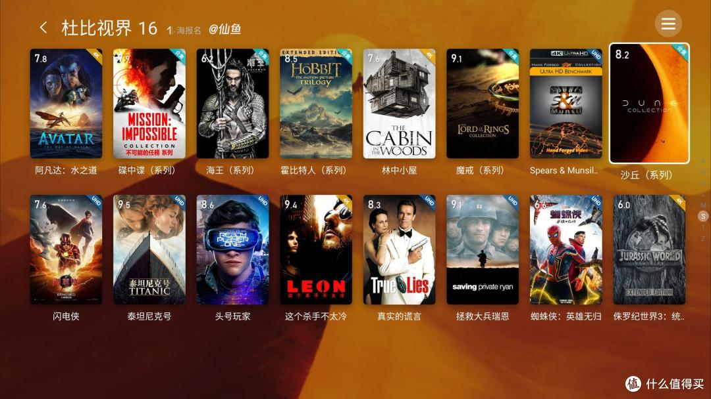
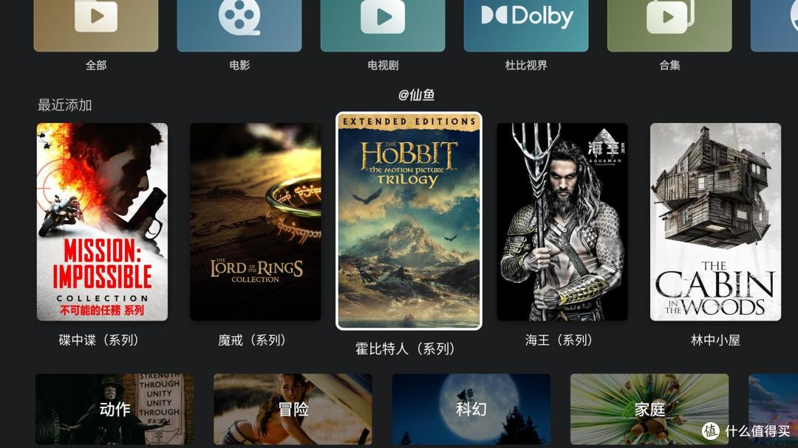
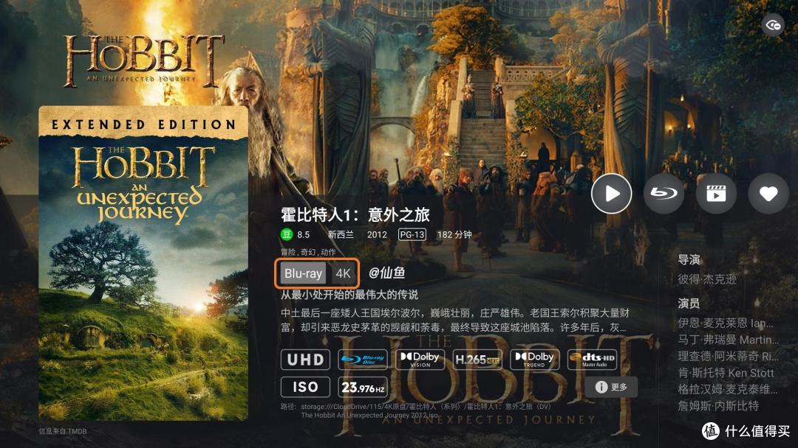
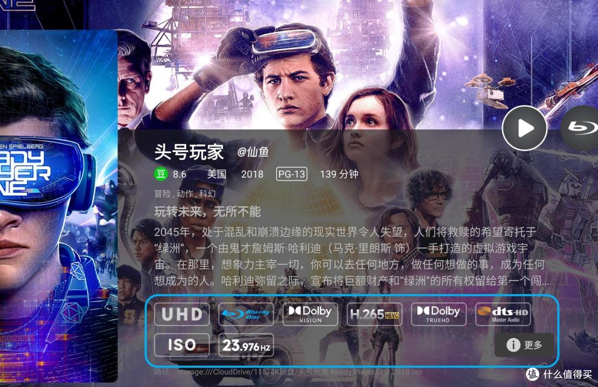
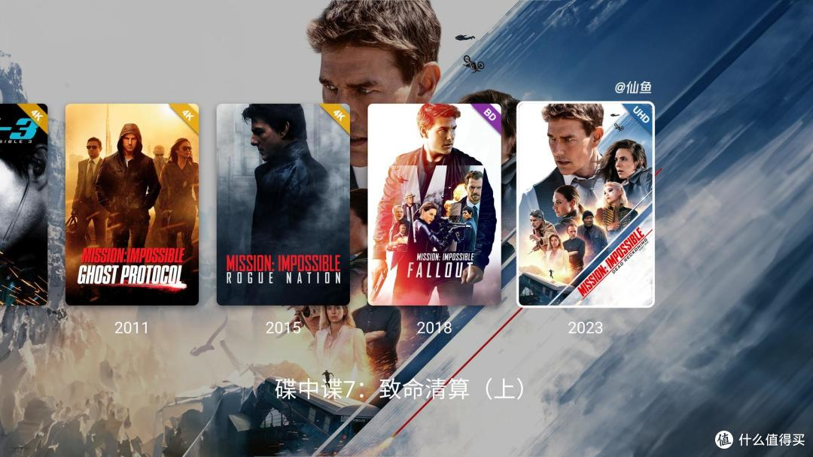
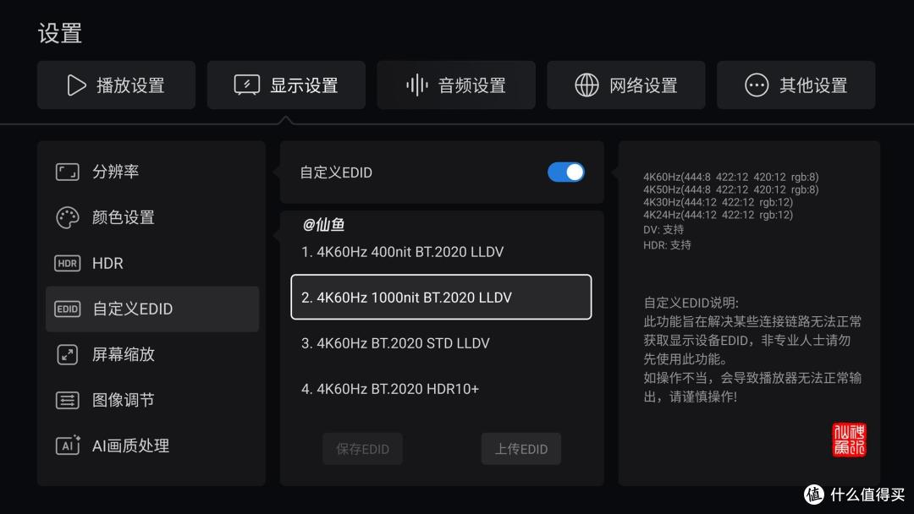
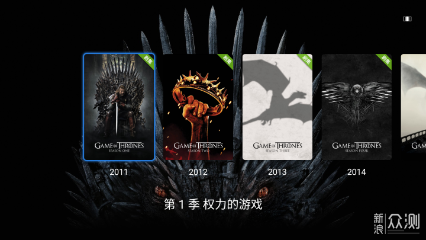
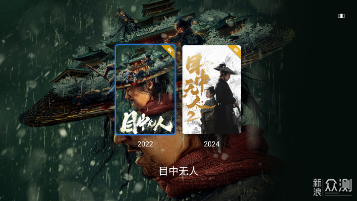
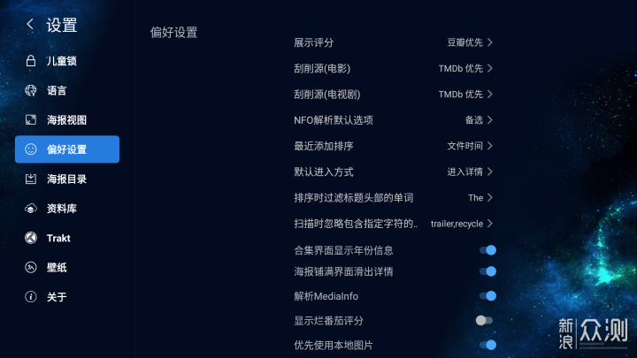
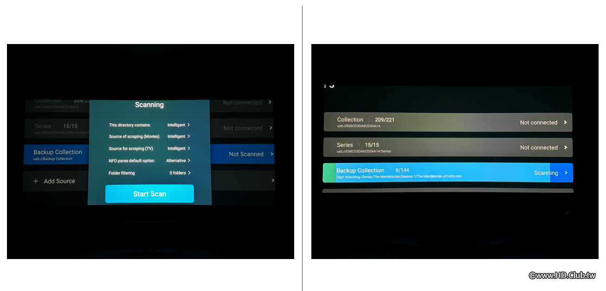

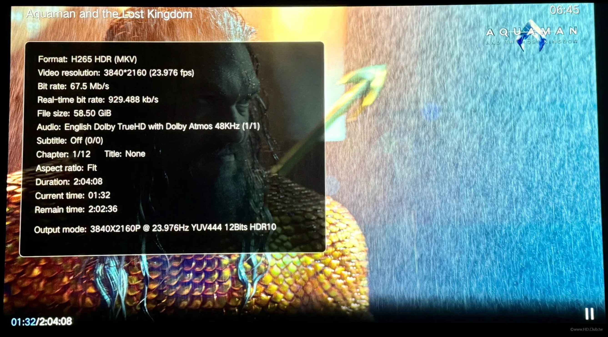
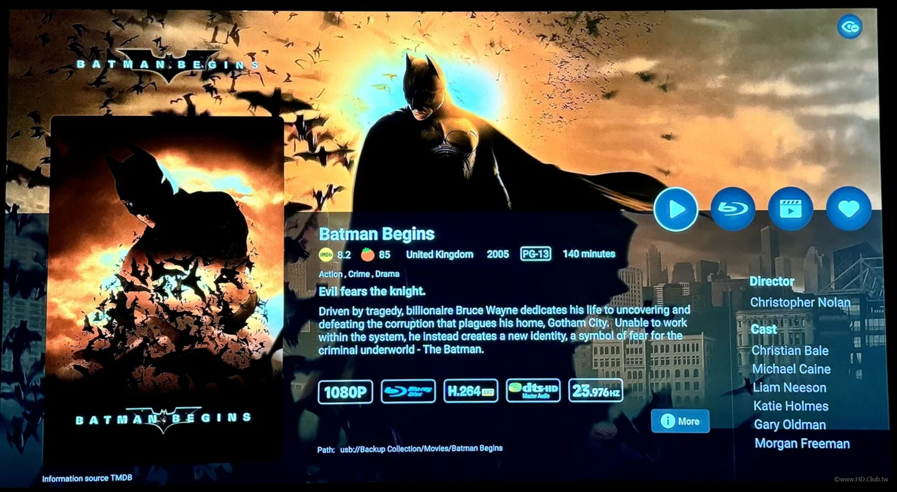
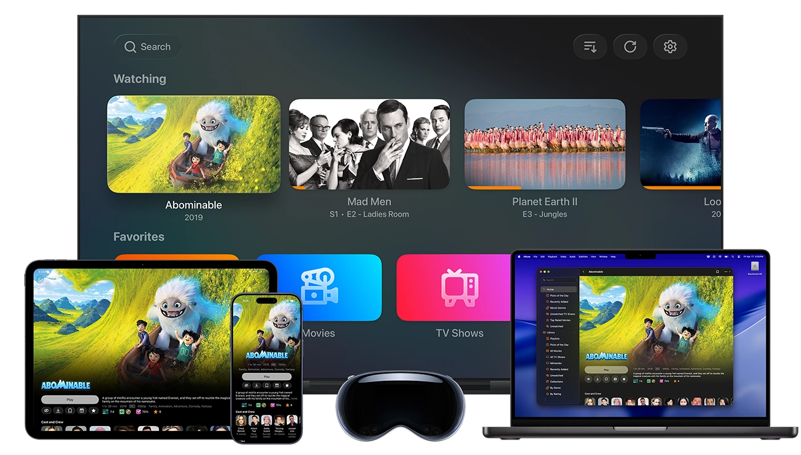
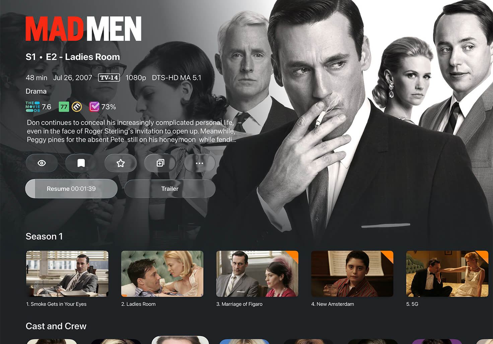
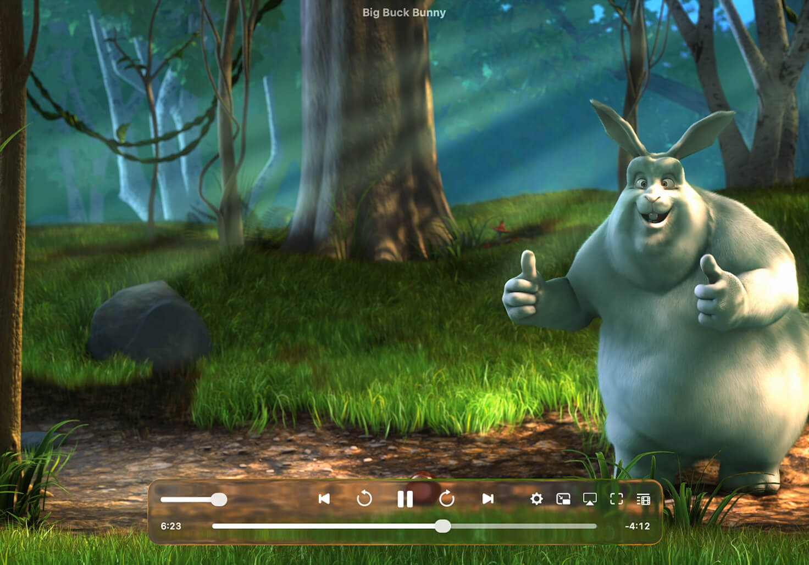
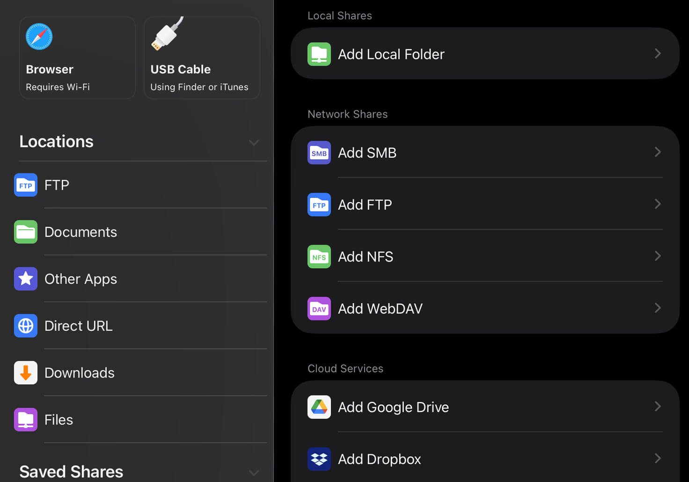
UI 拆解：它为什么看起来「高级」
1. 背景不是装饰，是「当前内容」
5.0 的海报墙与详情页，背景都取自当前分类或当前影片的同人画，再压一层暗角与渐变。海报因此像浮在电影画面之上，而不是贴在纯黑底上。切换分类时背景跟着换，用户不需要读标题就知道「我进了哪个世界」。
2. 一屏只做一件事
- 首页：回答「继续看什么 / 最近有什么」。
- 分类页：只放分类图标 + 最近添加 + 类型卡。
- 海报墙：只放海报与筛选，不再堆推荐位。
- 详情页：只围绕「这部片」——信息、版本、播放。
这种「一屏一个任务」让遥控器只有上下左右也能用，桌面端同样降低认知负担。
3. 信息层级只有三层
- 第一层：片名（最大、最亮）。
- 第二层：评分 / 年份 / 时长 / 分级，一行小字。
- 第三层：简介、导演、演员，弱化颜色。
技术角标（UHD / DV / Atmos / H.265 / 23.976Hz）单独收进一个圆角框，既有「发烧感」，又不会把正文挤散。这是芝杜详情页最值得学的一处。
4. 位置约定固定
评分永远在左上，格式角标永远在右上，片名永远在海报下方；详情页的播放按钮永远在右侧同一位置。用户看三张海报后就不需要再找按钮。
把「电视端手法」翻译成桌面端
| 芝杜手法 | 为什么有效 | Luma 桌面端应该怎么用 |
|---|---|---|
| 全屏同人画背景 | 建立沉浸感，让海报有「上映」的感觉 | 详情页用同一套：背景图 + 上下暗角渐变；首页 Hero 沿用现有做法即可。 |
| 2:3 竖版海报 | 与真实蓝光盒一致，识别速度最快 | 新增「海报墙」视图，卡片 150–170px 宽、2:3 比例；书架仍用 16:9 横图，两者不要混。 |
| 左上评分 / 右上角标 | 固定的视觉锚点，扫视即可判断 | 评分用琥珀小胶囊；4K/HDR/DV 用 9–10px 方角标，最多 2 个，避免糊满。 |
| 大图标分类 | 遥控器可聚焦，视觉上像「频道」 | 桌面端改为顶栏分段控件 + 「合集 / 收藏」胶囊；不要照搬圆形大图标占一整行。 |
| 技术角标框 | 把规格信息从正文里剥离，专业且整齐 | 详情页做一行 chips：4K · HDR · HEVC · Atmos；点「更多」再展开完整 ffprobe 信息。 |
| 年份索引合集 | 系列片按时间顺序看，符合观影习惯 | 合集详情横向排年份海报，年份在下方；点击直接播放对应版本。 |
| 焦点放大 + 描边 | 10 英尺外也能看清选中项 | 桌面端 hover 放大 1.02–1.03、描边 1px 琥珀；选中态再加强，不要用电视端 1.08 的幅度。 |
| 三栏设置页 | 左边找项、中间改值、右边解释 | 影院设置可保持现有单栏；专业项（镜像、NFO、语言）用「高级」折叠，避免一屏几十项。 |
芝杜海报墙：功能全表
| 模块 | 能力 | 具体表现 |
|---|---|---|
| 媒体源 | 多协议挂载 | 内置/外置存储、SATA、USB、SMB、NFS、UPnP；8K 机型支持 CD2 网盘本地化挂载；可添加多个目录。 |
| 初始化 | 首次向导 | 语言、屏幕缩放、时区、网络、音响连接方式、遥控器功能键、手机遥控配对。 |
| 扫描 | 扫描选项 | 智能判断电影/剧集、指定刮削源、NFO 解析（优先/备用）、优先本地图片、文件夹命名规则、跳过 trailer/recycle 等目录。 |
| 刮削 | 多源与国内加速 | TMDB 为主，豆瓣、TVDB 可选；数据存于厂商服务器并人工修正，国内直连速度与准确率明显优于第三方；支持实时扫描新文件。 |
| 刮削 | 未匹配与手动重配 | 首页「未匹配」集中展示；输入正确片名，从候选列表选择即可；长按海报也可重新匹配。 |
| 首页 | 正在观看 | 顶部横幅展示最近观看及进度，可直接续播。 |
| 首页 | 圆形分类 | 全部 / 电影 / 电视剧 / 未匹配 / 无聊模式 / 设备管理 / 编辑；可自定义分类与图标。 |
| 浏览 | 三种视图 | 经典（整屏海报网格）、卡片（上方信息 + 下方胶片条）、列表（左片名 + 右信息）。 |
| 浏览 | 筛选 | 类型、分辨率（4K/1080P/BD/UHD）、地区、年份；以及杜比视界、杜比全景声、dtsX 等规格标签筛选。 |
| 浏览 | 排序与搜索 | 按评分、时长、发行日期、添加时间排序；搜索片名、演员、导演；右侧字母索引。 |
| 详情 | 元数据 | 海报、同人画、评分（豆瓣/IMDb 可选）、国家、上映日期、时长、分级、类型、简介、导演、演员；演员可进入个人页并看相关作品。 |
| 详情 | 预告片与花絮 | 停留数秒自动播放右上角预告片；支持在线花絮。 |
| 详情 | 技术参数 | 分辨率、HDR 类型、编码、音轨、码率、帧率、文件大小、路径；角标 4K / UHD / BD 自动判断。 |
| 剧集 | 季 / 集聚合 | 多文件夹的同一部剧自动合并；按季选择后进入分集；显示集数。 |
| 剧集 | 跳过片头片尾 | 可自定义跳过时长，播放时自动跳过。 |
| 组织 | 合集 | 自动识别系列电影/剧集并归入合集；可自定义；合集内按年份排列并显示年份信息。 |
| 组织 | 多版本合并 | 同一影片的 MKV / ISO / 不同版本自动归为一个条目；播放时选版本；支持自定义版本显示名。 |
| 播放 | 格式与画质 | BD/UHD 原盘（BDMV/ISO）、3D MVC、MKV、M2TS、MP4、MOV 等；AV1 解码；Dolby Vision / HDR10+ / HLG / dts 授权；VS10 引擎；自动帧率切换。 |
| 播放 | 字幕 | 内置字幕选择、外挂字幕、在线下载字幕；支持 SRT/ASS/SUP/PGS；位置、大小、颜色、字体、时间轴、亮度微调。 |
| 播放 | 蓝光与音轨 | 蓝光菜单、章节跳转；音轨切换与源码透传；播放信息叠加。 |
| 设置 | 偏好设置 | 评分源、刮削源、NFO 解析、最近添加排序、默认进入方式、合集年份、番茄评分、优先本地图片、Trakt、海报视图、儿童锁、语言、壁纸。 |
| 互通 | 导出与同步 | 导出 NFO/海报供 Jellyfin/Emby 使用；Trakt 记录；2026 年固件支持多台芝杜同步（论坛公告）。 |
| 遥控 | 手机 App | iOS/Android 横屏，浏览海报墙、当触控板、屏幕镜像、悬浮按钮、WOL 开机。 |
芝杜操作手册：从零到能看片
确认版本与存储
先升级固件与「海报墙」App。影片可放内置硬盘、SATA/USB 移动硬盘或 NAS；NAS 建议用有线千兆，SMB/NFS 均可。网盘资源用 CD2 挂载成本地路径后再加入海报墙。
设置 › 关于 / 升级 · 海报墙 App 独立更新首次启动：语言与儿童锁
第一次打开海报墙会要求选语言、是否开启儿童锁；不需要可直接跳过。儿童锁会按分级限制可浏览内容。
添加片源
首页点「设备管理」→「添加源」，选择电影所在文件夹。支持多目录；本地、外置、SMB、NFS 都可以。SMB 会自动发现局域网设备，按提示输入账号密码。
海报墙首页 › 设备管理 › 添加源 › 选择目录配置扫描选项
刮削源建议「智能」；电影与剧集可分别指定 TMDB / 豆瓣 / TVDB。已有 tmm 等工具刮好的本地图片时，勾选「优先选择本地图片」，NFO 解析设为「备用」或「优先」。确认后开始扫描。
添加源 › 扫描选项 › 开始扫描等它自动分好类
海报墙会判断是电影还是剧、把不同文件夹里的同一部剧合并、自动收录系列合集。扫描完成后首页出现「正在观看 / 分类 / 最近添加」。
处理未匹配
进「未匹配」→ 选中影片 →「重新匹配」→ 输入正确片名 → 从候选里选。匹配后立刻更新海报与详情，不需要重扫全库。命名越规范命中率越高：片名.2024.2160p.mkv、剧名.S01E02.1080p.mp4。
浏览：分类 + 筛选 + 排序
用圆形分类进「电影 / 电视剧」；进入分类后按类型、分辨率、地区、年份筛选，按评分/时长/发行日期排序；搜索框可搜片名、演员、导演。右上角字母索引适合大库。
分类页 › 筛选 / 排序 / 搜索切换三种视图
经典模式适合扫海报；卡片模式边看信息边挑片；列表模式信息密度最高。设置里可指定默认视图。
详情页：先看信息，再按播放
详情页会显示海报、同人画、评分、国家、日期、时长、分级、类型、简介、导演与演员；停留几秒自动播预告片。点演员可进入个人页，查看相关作品。
剧集与跳过片头尾
进入剧集先选季，再选集；多文件夹的同一部剧已合并。详情页右上角人形图标里可设置跳过片头/片尾的秒数，播放时自动跳过。
多版本与合集
同一影片的 MKV 与 ISO 会自动归到同一部电影，播放前选版本；海报角标 4K（仅有 4K MKV）、UHD（含 4K 原盘 ISO）、BD（1080P 原盘）。合集可在合集页统一浏览。
播放：字幕、音轨、蓝光菜单
播放中可切换内置字幕/音轨，或「下载字幕」在线搜索外挂字幕；支持 SRT/ASS/SUP/PGS 与样式微调。原盘支持蓝光菜单与章节。按信息键查看码率、HDR、音轨、输出模式。
偏好设置一次调好
评分源（豆瓣优先）、电影/剧刮削源、NFO 解析、最近添加排序、默认进入方式、合集显示年份、番茄评分、优先本地图片、Trakt、海报视图、儿童锁、壁纸。
海报墙 › 设置 › 偏好设置导出 NFO（给 Jellyfin / Emby 用）
把芝杜刮好的 NFO 与海报导出到影片目录，其他媒体服务器可直接读取，省掉二次刮削。
手机遥控与多机同步
手机装「ZIDOO 控制」App，横屏浏览海报墙、镜像屏幕、当触控板与键盘；支持 WOL 开机。2026 年固件加入多台芝杜同步能力。
Infuse 8.5：功能与操作指引
功能要点
- 来源：本地、SMB、FTP、NFS、WebDAV、UPnP/DLNA；Dropbox/Google Drive/OneDrive/Box/MEGA/阿里云盘/123 云盘/115/百度；Plex/Emby/Jellyfin。
- 自动整理：自动下载元数据与封面，电影续集归入系列；可自建合集与播放列表。
- 播放：4K HDR / HDR10+ / Dolby Vision（P5/P8）/ Dolby Atmos（E-AC3）；多格式硬解；8.5 起可请求服务器转码。
- 字幕：内置与外挂，OpenSubtitles 一键下载；字幕样式可覆盖。
- 体验：多版本合并、跳过片头片尾（IntroDB）、花絮/删减片段、倍速、画中画、AirPlay/Google Cast、家长控制。
- 同步：iCloud 同步媒体库、设置与播放进度；Trakt 双向同步观看历史与评分。
操作路径
- 安装后进入「添加文件」：选本地目录，或 SMB / FTP / NFS / WebDAV，或云盘与媒体服务器。
- 为每个来源选内容类型（电影 / 剧集 / 其他），打开「自动扫描」。
- 设置里选元数据语言、评分来源（TMDB/番茄等）、是否显示预告片。
- 首页 Watching 续播；Movies / TV Shows 浏览；搜索可跨来源。
- 详情页可看季/集、Cast & Crew、Trailer；同一影片多个版本自动合并，播放前可选。
- 播放中调字幕/音轨/倍速；长按播放可请求 Plex/Emby/Jellyfin 转码版本（8.5）。
- 设置里连接 Trakt 与 iCloud，实现跨设备续播；家长控制按分级与文件夹限制。
Luma 影院现状清点
已经有的
- 三数据源：TMDB、豆瓣与 TVDB，默认豆瓣免 Key；接口/图片镜像、Cookie、语言、测试连接、自动刮削开关，刮削源可拖动调整优先级。
- 作用域：本地图库影院 + 每个网盘独立影院，互不混。
- 浏览：全部 / 电影 / 电视剧 / 文件夹；书架 / 海报墙 / 卡片 / 列表四种视图，顶栏切换并记住选择。
- 文件夹视图：按真实目录建树，首层是顶层目录，点卡片逐层进入并可用面包屑回退，任意深度都能一直点下去；每层只列直属视频，未刮削的也会出现，匹配后直接显示影片 / 剧集名；整目录刮削或手动匹配会连同子目录处理。
- 继续观看：本地记录播放位置，每 10 秒落盘、关闭查看器强制保存；首页书架 + 顶栏「继续 SxxExx」+ 详情页进度；首页「N 部待续播」可点击展开完整队列，不再横向硬塞。
- 观看记录：独立面板，按最近观看排序，显示剩余时间 / 已看完，可继续播放或单条移除，也支持一次清空。
- 详情页：直接在影院页面内铺满展示（不再弹独立窗口），返回并入顶栏「返回影院」（Esc 同效），回列表且保留原滚动位置；剧照虚化底与深色影院风。影片与剧集共用一套「档案卡」：左侧竖版海报（180–220pt、4px 香槟边 + 24px 投影、最多 5 张可左右切换）、评分牌与进度，右侧 24pt 衬线片名、简介与图标资料网格；演职员、预告片、多版本、合集与技术信息收在同一张卡或下方分区。剧集按季分组、带下一集与分集网格。
- 影院内搜索：顶栏放大镜，按片名 / 原名 / 文件名 / 类型 / 演员 / 导演检索，可直接播放或进详情。
- 相簿内影院操作：在相簿 / 网格里多选视频后右键，可手动匹配（一次套用到所选文件）、刮削所选、加入影院收藏 / 想看 / 清单，并跳到对应影院；多选的是剧集时进入季集映射页，先选剧再逐集确认季与集号，纯数字文件名与 4K 同名版本会自动归到同一集。
- 筛选与排序：年代 / 类型 / 分辨率 / 观看状态可多选（组内 OR、组间 AND），另有「高分 8+」「最近 30 天」智能筛选；排序为最近添加 / 评分 / 年份 / 片名 / 时长 / 随机，菜单项直接写出方向文案，随机在会话内稳定、进入影院时重洗。
- 手动匹配：未识别或匹配错误的条目可输入片名，从豆瓣 / TMDB 候选中选择，只改当前一条。
- 个人状态：收藏 / 想看 / 1–5 星评分；自定义清单支持新建、加入、按清单筛选与删除。
- 合集与多版本：TMDB belongs_to_collection 自动归组；同 tmdbID 多文件按画质保留最佳版本，详情页可选版本播放。
- 演职员 / 预告片：TMDB credits / videos 补全，详情页横向演职员与 YouTube 预告；刮削时按 tmdbID 去重只拉一次。
- 在线字幕：OpenSubtitles 搜索 / 下载到本机缓存，播放器字幕菜单直接载入，同名外挂仍然优先。
- 设置：影院设置分「刮削 / 字幕 / 显示 / 播放 / 来源 / 家长 / 高级」七页；显示页含每行数量、海报比例、背景同人画、减弱动效、界面语言；播放页含默认音轨 / 字幕、全局跳过片头片尾、记忆倍速、优先硬解、画中画；高级页含豆瓣镜像、请求超时、日志等级、缓存清理、重建索引与导出 NFO。
- 任务中心：每次刮削留下记录（来源、总数、识别数、耗时、结果），失败可一键重试，支持清空归档。
- 家长控制：按 TMDB 分级过滤影院；PIN 只存 macOS 钥匙串，本次会话解锁、退出即重新上锁。
- 剧集：多集聚合成一张卡，详情页在影院内铺满展示、按季分组，带「继续 / 下一集」入口、单集进度条与已看完标记。
- 未识别：单独书架；右键「重新刮削」；顶栏状态面板可「重新刮削全部」。
- 顶栏：拟物放映机控制台（选片开关、视图、继续、筛选、排序、搜索、观看记录、任务、家长锁、助手、刮削、设置）。
- 播放：走内置查看器/播放器，支持同名外挂字幕（srt/vtt/ass/ssa）与字幕偏移。
刚补齐的与仍缺的（2026-11-23）
- ✅ NFO 读取 / 导出：刮削前读目录 NFO（本机与网盘同目录），命中即跳过网络；导出已支持 Kodi / Jellyfin / Emby 可读的
movie/episodedetails，刮削后按开关自动导出，设置 › 高级也可立即导出。 - ✅ 片头片尾：剧级 / 单集设置、ffmpeg 自动识别、IntroDB 在线时间轴与起播时补查均已接通。
- ✅ 播放器级能力：DV / Atmos 角标与筛选、I 键播放信息、章节跳转、播放器级帧率匹配已做。
- ○ 仍缺：跨设备同步 / 手机遥控 / Trakt；蓝光菜单与 ISO / BDMV 原盘仍受系统与解码链路限制。
三方能力矩阵
| 能力 | 芝杜海报墙 | Infuse 8.5 | Luma 影院 | 备注 / 差距 |
|---|---|---|---|---|
| 本地 + 网络片源 | ● 本地/SMB/NFS/UPnP | ● 更全（FTP/WebDAV） | ◐ 图库视频 + 网盘挂载 | Luma 没有「随便指一个影片目录」的入口。 |
| 云盘直连 | ● CD2 本地化 | ● 12+ 家 | ● 夸克/阿里/百度/WebDAV/SMB/AList | Luma 的网盘影院是独有优势：与照片库同一套挂载。 |
| 自动刮削 | ● | ● | ● | 三者都按文件名匹配。 |
| 多刮削源 | ● TMDB/豆瓣/TVDB | ◐ TMDB 为主 | ● TMDB + 豆瓣 + TVDB | 三源可拖动排序、逐源测试连通性；默认豆瓣更适合国内。已完成 |
| 刮削速度/国内可用 | ● 厂商缓存 | ◐ 依赖网络 | ◐ 直连/镜像 | 芝杜优势来自服务端，不是客户端可轻易复刻。 |
| 手动重配 | ● 输片名选候选 | ◐ 编辑元数据 | ● 候选列表 | 输入片名 → 豆瓣/TMDB 候选 → 只改当前条目。已完成 |
| 首页继续观看 | ● | ● Watching | ● 首页书架 + 队列展开 | 首页书架 + 顶栏续播 + 详情进度；多部待续播时显示「N 部待续播」，点击展开完整队列。已完成 |
| 分类导航 | ● 圆形分类 + 自定义 | ● 侧栏分类 | ● 全部/电影/电视剧/文件夹 | 四段导航 + 书架按继续观看 / 最近添加 / 高分 / 合集 / 清单分段；自定义智能清单待补。已完成 |
| 视图模式 | ● 经典/卡片/列表 | ● 网格/列表 | ● 书架/海报墙/卡片/列表 | 顶栏切换并记住选择；卡片模式胶片条放不下时收成「还有 N 部」，点开展开网格，不再横向硬滚。已完成 |
| 筛选 | ● 类型/分辨率/地区/年份/规格 | ◐ 类型/年份/未看/收藏 | ● 多选 + 智能筛选 | 年代 / 类型 / 分辨率 / 观看状态可多选；另有高分与最近 30 天。已完成 |
| 排序 | ● 多字段 | ● 多字段 | ● 6 种（含随机） | 最近添加 / 评分 / 年份 / 片名 / 时长 / 随机，菜单项直接写方向；随机在会话内稳定、进入影院时重洗。已完成 |
| 搜索 | ● 片名/演员/导演 | ● 全局 | ● 片名/演员/导演/类型/文件名 | 影院内搜索面板已实现；补全演职员后演员与导演可搜。已完成 |
| 详情页 | ● 全量 | ● 全量 | ● 页面内铺满 | 背景 / 海报 / 评分 / 技术角标 / 进度 / 文件信息；海报 180–220pt、4px 香槟边 + 24px 投影，最多 5 张可左右切换；片名 24pt 衬线。不再弹独立窗口，左上「返回」回列表。已完成 |
| 演职员 | ● 可进个人页 | ● Cast & Crew | ● 横向头像条 | TMDB credits 补全，详情页展示姓名与角色。已完成 |
| 预告片 | ● | ● | ● YouTube | TMDB videos 取 Trailer / Teaser。已完成 |
| 技术参数/角标 | ● | ● | ● 分辨率/编码/大小/时长 + DV/HDR/Atmos/帧率 | 文件名派生 DV / HDR / Atmos / 60fps 角标与筛选；详情页补 HDR / 音轨 / 帧率资料项。已完成 |
| 剧集聚合 | ● | ● | ● | Luma 已做到「一部剧一张卡」。 |
| 季分组 / 下一集 | ● | ● | ● 按季分组 + 下一集 | 按季切换；优先续看进行中，否则接在最后看完的一集之后。已完成 |
| 跳过片头尾 | ● 自定义时长 | ● IntroDB | ● 剧级设置 + 本地自动识别 | 片头 / 片尾按剧保存；本地分集可「自动识别」跑 ffmpeg 静音检测给出建议秒数。已完成 |
| 合集 | ● | ● | ● | TMDB belongs_to_collection 自动归组，书架与详情页都可进入。已完成 |
| 多版本合并 | ● | ● | ● | 同 tmdbID + 季集号合并，画质优先，详情页选版本播放。已完成 |
| 播放进度/续播 | ● | ● 跨设备 | ● 本地持久化 | 每 10 秒落盘、关闭强制保存、云盘续播重试，已实现。P0 |
| 收藏 / 评分 / 想看 | ● | ● Trakt | ● 本地 + 清单 | 本地收藏、想看、1–5 星与自定义清单，已实现。P1 |
| 在线字幕 | ● | ● OpenSubtitles | ● OpenSubtitles | 搜索 / 下载 / 缓存已接通，同名外挂仍优先。已完成 |
| 字幕样式 | ● 位置/字号/颜色/时间轴 | ● | ● 字号 / 颜色 / 位置 / 背景 + 烧录 | 字号、颜色（白/黄/青/绿）、位置（底部/偏上/中间）、背景开关；播放器字幕菜单可把 PGS/SUP/ASS 烧进画面。已完成 |
| 原盘 / ISO / BDMV | ● 蓝光菜单 | ● | ◐ 取决于解码链路 | 播放器能力，非影库层可解决。 |
| DV / Atmos 亮标 | ● | ● | ● 角标 + 筛选 | 文件名里的 DV / HDR / HDR10+ / Atmos / 60fps 进入海报角标、列表规格、详情资料与筛选面板。已完成 |
| NFO 读取 / 导出 | ● | ◐ | ● 读取 + 导出 | 刮削前读目录 NFO（movie.nfo / tvshow.nfo / 同名 .nfo），本地与网盘都支持；导出 Kodi / Jellyfin / Emby 可读 XML，刮削后按开关自动导出，也可手动立即导出。已完成 |
| 实时扫描 | ● | ● 后台扫描 | ● 本地 FSEvents + 网盘扫描 | 本地 originals 目录变化后刷新影院并按设置自动刮削；云盘仍靠扫描 / 刷新目录。已完成 |
| 家长控制 | ● 儿童锁 | ● | ● 分级 + PIN | 按 TMDB 分级过滤；PIN 存钥匙串。已完成 |
| 手机遥控 | ● | ◐ 系统遥控 | ○ | macOS 场景优先级低。 |
| 跨设备 / Trakt 同步 | ● 多机同步 | ● iCloud + Trakt | ○ | 定位不同，可后置。 |
| 视觉风格 | 电视端 10 英尺、华丽 | Apple 式克制、留白 | 拟物放映机控制台 + 暖色玻璃 | Luma 已有自己的辨识度，不要推翻。 |
再往下一层：两套「组织模型」
芝杜 5.0：把首页做成「可编辑的小组件栏」
- 首页不是固定板式：分类主页是一条小组件栏，「分类 / 最近添加 / 自定义分类」都能编辑、排序、增删；新建一个分类后，它会立刻生成一个首页小组件。
- 分类即入口，也是状态：全部 / 电影 / 电视剧 / 未匹配 / 杜比视界 / 合集并列；「未匹配」不是设置项，而是一个需要被清空的分类。
- 合集是双层结构：自动合集读 TMDB 系列归属；自定义合集由用户手动选片、指定合集名与顺序；两者在同一个合集页里并存。
- 匹配是一套「准则」而非按钮：官方教程把命名规则、简体中文语言、NFO 与本地图片优先级写成了固定流程，并支持按文件夹批量匹配电视剧。
- 数据可带走：刮削结果可导出 NFO / 海报给 Jellyfin、Emby；这是「厂商缓存」之外的第二层价值。
依据：ZIDOO 论坛《海报墙 5.0 使用技巧索引》（匹配准则、分类模式、自定义合集、设置）与 UHD8000 产品手册。
Infuse 8：把「库」做成三层，播放状态是粘合剂
- Library 自动分三层：Movies / TV Shows / Other 由文件与元数据自动归类；自定义 Collections 与 Playlists 叠加在上层，可 shuffle / loop。
- 筛选与收藏是浏览的一部分：官方页面明确 filter by genre / rating / resolution / watched；favorites 可 pin 在首页，不需要进设置。
- Extras 进了详情页：8.4 起支持删减片段、花絮、短片、预告，来源可以是 Emby / Jellyfin / Plex，也可以直接是文件夹与网盘。
- 播放体验前置：跳过片头片尾由 IntroDB / TheIntroDB 提供；AI 上采样；DV P5/P8、HDR10+；Atmos（E-AC3）透传。
- 状态跨设备：iCloud 同步媒体库、设置与播放进度；Trakt 双向同步观看历史与评分；家长控制同时按分级与文件夹限制。
依据：Firecore 官方 Infuse 页面（Library / Playback / Streaming / Pro 功能表）与 8.4、8.5 更新说明。
两种模型对 Luma 的直接结论
| 维度 | 芝杜：用户编排的小组件 | Infuse：自动库 + 收藏叠加 | Luma 应采用 |
|---|---|---|---|
| 首页 | 可编辑分类栏 + 正在观看 + 最近添加 | Watching + Favorites + 横向卡片 | 固定三段（继续观看 / 最近添加 / 高分）+ 可编辑「我的清单」；先固定，后开放编排。 |
| 分类 | 系统分类 + 用户自定义分类 | Movies / TV / Other 自动分类 | 全部 / 电影 / 电视剧 / 收藏 / 合集 / 未识别；自定义分类放 P2，避免分类治理失控。 |
| 合集 | 自动合集 + 自定义合集（手动选片/排序） | TMDB 系列 + 自定义 Collections | 先做 TMDB 自动合集；自定义合集与排序作为 P2，不抢 P0 的资源。 |
| 匹配 | 输入片名选候选、批量匹配剧集 | 编辑元数据、修正匹配 | 单条手动匹配 P0；批量匹配按文件夹 P1；命名规则直接写进空状态文案。 |
| 详情 | 全量元数据 + 预告 + 演职员个人页 | 全量 + Extras + 多版本 | 全量元数据 + 版本 + 预告；演职员个人页 P1；花絮/删减 P2。 |
| 播放 | 蓝光菜单、帧率切换、信息叠加 | 全格式、跳过片头、上采样 | 控制层（字幕/音轨/章节/倍速/信息）先做；蓝光菜单与帧率匹配受解码链路限制，后置。 |
| 状态 | 本机观看记录 + 多机同步（2026） | iCloud + Trakt | 本地持久化 P0；iCloud 同步 P2；不引入账号体系。 |
| 差异化 | 硬件、遥控器、厂商刮削缓存 | Apple 全平台、媒体服务器接入 | 与照片库、网盘同一套挂载；不做第二个播放器，做「照片旁边那个能看片的房间」。 |
顶部栏解剖：一条控制台装下所有功能
现有控制台已经具备身份铭牌、三分类、筛选、助手、刮削、更多。要承载完整影库，需要把它扩展成五个功能区： 身份、导航、浏览控制、动作、清单与记录（收在「更多」）。下面的编号对应分区，不是最终像素稿。
当前作用域（本地图库 / 某个网盘）+ 已识别 / 未识别计数。点击打开「放映室状态」：数据源、上次扫描、任务、存储路径。永远不折叠。
全部 / 电影 / 电视剧 / 文件夹，机械选片开关。这是唯一改变内容集合的控件，⌘1 / ⌘2 / ⌘3 直达。
收藏、自定义清单、观看记录、任务中心、通知中心都收在右侧「更多」菜单，按键带未读角标；未识别用珊瑚色，提示「有活要干」。
⌘F 打开影院搜索浮层，搜片名 / 原名 / 演员 / 导演 / 文件名；窄窗口不折叠，整条控制台内部横向滚动。
海报墙 / 书架 / 列表 / 卡片。默认记住上次选择；⌘0 循环切换。这是「浏览姿态」，不改变数据。
筛选展开为面板（类型 / 年代 / 分辨率 / 未看 / 收藏）；排序直接显示当前值（最近添加 ▾）。已生效条件在栏内以琥珀胶囊回显。
有进度时出现「继续 SxxExx」；刮削键在任务中变成百分比与底部进度灯，点击打开任务中心。
智能助手（只读）与「更多」；影院设置、观看记录、任务中心、通知中心都收在「更多」里。「更多」永远在最右，形成稳定的肌肉记忆。
两种运行状态
窄窗口：整条保持一行，内部横向滚动
窗口变窄时不做折叠：整条控制台内部横向滚动，按钮保持文字与图标，右侧动作键始终可见；记录类入口统一收在右侧「更多」菜单里。
任务中：进度在栏内，详情在任务中心
任务期间不锁定浏览：可以继续看片、筛片、进详情。只有「刮削」键进入进度态，完成后回到原状，并在未识别计数上反映结果。
控件行为与窄窗口表现
| 控件 | 位置 | 行为 | 快捷键 | 窄窗口 |
|---|---|---|---|---|
| 身份铭牌 | 最左 | 切换作用域；打开状态浮层（来源、计数、最近任务、路径）；进详情 / 子目录后换成「返回」 | — | 保留，整条横向滚动 |
| 主导航 | 左二 | 全部 / 电影 / 电视剧 / 文件夹，切换时保留筛选与滚动位置 | ⌘1 / ⌘2 / ⌘3 | 保留文字，整条横向滚动 |
| 清单入口 | 右侧 | 收藏、自定义清单与「新建清单…」统一收在右侧「更多」菜单 | — | 收在「更多」 |
| 搜索 | 右侧 | 打开影院搜索浮层；结果按电影 / 剧集 / 人物分组 | ⌘F | 保留图标，整条横向滚动 |
| 视图切换 | 左三 | 书架 / 海报墙 / 卡片 / 列表，记住上次选择 | ⌘0 循环 | 保留文字，整条横向滚动 |
| 筛选 | 左三 | 展开筛选面板；已生效条件以胶囊回显 | ⇧⌘L | 保留文字，整条横向滚动 |
| 排序 | 左三 | 最近添加 / 评分 / 年份 / 片名 / 时长 / 随机；写入偏好 | — | 保留文字，整条横向滚动 |
| 继续播放 | 右区 | 有进度时出现；剧集直接续播下一集；无进度时隐藏 | ⌘⏎ | 保留，整条横向滚动 |
| 刮削 / 任务 | 右区 | 开始刮削；进行中显示百分比；点击进任务中心 | ⌘R | 保留，整条横向滚动 |
| 助手 / 更多 | 最右 | 只读助手；影院设置、观看记录、任务中心、通知中心都收在「更多」 | — | 保留，整条横向滚动 |
ToolbarItem，分组之间用细分隔线与留白；② 高频操作才进顶栏，低频操作进铭牌浮层、任务中心或右侧「更多」；
③ 危险操作（清空历史、删除片源、重置匹配）永远不在顶栏，必须在二次确认的面板里。
Luma 影院 UI 方案：做成什么样
- 第一屏先回答「看什么」：继续观看放在最上，没有历史时整块隐藏，Hero 大图顺位补上。
- 所有控制都在标题栏那一行：资料库铭牌（网盘 · 已识别 / 未识别）+ 全部 / 电影 / 电视剧 / 文件夹 + 视图 / 筛选 / 排序 + 搜索 / 一键整理 / 助手 / 刮削 / 更多；内容区不再出现第二行标题。
- 书架保留 16:9：首页是「浏览」，用横图更快；海报墙才用 2:3，两种视图不混。
- 每张卡固定锚点：左上评分、右上格式角标、下方片名，最多两行。
- 背景取当前影片/分类的同人画并压暗到 20% 亮度，海报像浮在画面上；切分类时背景交叉淡入。
- 筛选与排序也在顶栏：已生效的条件以琥珀胶囊显示（4K / 未看），排序直接写当前值（最近添加），内容区第一行就是海报。
- 排序固定在最右：最近添加、评分、年份、片名；记住上次选择。
- 网格 6 列、间距 16：桌面端 1360 宽正好；窗口变窄自动降为 5/4 列。
PART TWO
- 海报做实体感：竖版海报外圈 4px 香槟边 + 投影，像一张蓝光盒；这是芝杜 5.0 最有效的「高级感」来源。
- 技术角标单独成组：规格 chips 与简介分开，选中版本用琥珀描边；点「更多」展开完整 ffprobe。
- 主操作永远在同一个位置：播放按钮紧随元数据，收藏/预告/更多次之；剧集则显示「继续 S01E04」。
- 演职员头像一行：点开可看相关作品；没有数据时整行隐藏，不留空。
- 先季后集：季切换只影响这一部剧：多季时在「剧集」标题行用「第 N 季 · M 集 ▾」下拉，菜单按季列出「集数 · 已看数」，18 季也不会滚丢当前季；只有一季时直接标明「第 N 季 · M 集」。未收录的季不列出。已看集压暗、当前集描边琥珀。
- 「继续 S01E04」固定在顶栏：不用翻列表就能接着看；没有进度时显示「播放第一集」。
- 集卡显示 SxxExx + 集名：文件名只在 tooltip 里，界面不上文件名。
- 跳过片头尾已接通：剧级设置片头 / 片尾秒数，起播跳过片头，剩余时间进入片尾区间自动跳结尾。
- 合集背景用系列同人画：年份在海报下方，底部一行合集名，不做多余按钮。
- 点海报进详情：桌面端悬停显示「播放 / 详情」，单击默认进详情页，播放交给详情页里的播放按钮；双击同样进详情，右键菜单保留播放。设置里仍可改回「单击直接播放」。
- 版本在这里合并：同一部片多个文件只出现一次，播放前弹版本选择。
- 自动归档来源：TMDB belongs_to_collection；没有归属就不造合集。
设计 token（影院内部）
内容区背景
卡片 / 浮层
播放 / 选中 / 进度
主文字
次级信息
排版与尺寸
- 海报：2:3，宽 150–170；网格间距 16；圆角 6。
- 详情海报：宽 180–220，外框 4px 香槟色 + 24px 投影。
- 标题：详情 22–24（衬线），卡片 9–10.5，区块标题 13–14。
- 元数据行：10.5–11，评分用琥珀 700。
- 角标：9–10，最多两个；4K 金、UHD 蓝、DV 黑金。
- 间距：8 / 12 / 16 / 24；区块之间 24。
交互与状态
- 悬停：卡片上浮 4px、放大 1.02、描边 1px 琥珀，180ms。
- 选中：描边 2px + 底部 2px 灯条，不使用整块高亮。
- 进入详情：背景先淡入，海报 120ms 后上浮 8px。
- 播放：详情主按钮与卡片右键都有；空格键暂停。
- 返回：Esc 回海报墙，保留滚动位置与筛选。
- 浅色：影院内部固定深色；离开影院恢复浅色，不做半透明混搭。
全功能界面图集：每个功能落在哪一屏
ToolbarItem，因此不会出现「整条比窗口宽 → 被系统收进溢出菜单 → 消失」的问题。
界面地图：从一条顶栏长出的 40 屏
浏览 · 发现
- 首页（扩展）E1
- 海报墙A1
- 卡片模式A2
- 列表模式A3
- 全局搜索A4
- 收藏 / 清单A5
- 新建清单F3
详情 · 操作
- 电影详情B1
- 剧集详情B2
- 合集详情B3
- 人物页B4
- 手动匹配B5
- 批量匹配E9
- 右键菜单E10
播放 · 状态
- 播放器C1
- 播放信息C2
- 观看记录C3
- 音轨/章节/倍速E6
- 在线字幕E5
控制面板
- 筛选面板E2
- 排序与显示E3
- 版本选择E4
- 来源管理E7
- 家长控制E8
入口 · 反馈
- 侧边栏影院F1
- 首次建库F5
- 通知中心F4
数据 · 设置
- 任务中心D1
- 添加片源D2
- 添加来源表单F2
- 设置 · 刮削D3
- 设置 · 显示F6
- 设置 · 播放F7
- 设置 · 高级F8
- 空态与错误D4
功能覆盖表
| 功能 | 所在界面 | 顶栏入口 | 优先级 | 关键状态 |
|---|---|---|---|---|
| 影院入口 | 侧边栏影院节点 | 侧边栏 | P0 | 每个挂载点独立影院 |
| 继续观看 | 首页 / 观看记录 | ▶ 继续 SxxExx | P0 | 无进度时整块隐藏 |
| 首页三段 | 首页（扩展） | — | P0 | 继续观看 / 最近添加 / 高分 |
| 观看历史 | 观看记录 | 顶栏「更多」· 观看记录 | P0 | 分组：今天 / 本周 / 更早；分段：全部 / 进行中 / 已看完；单条移出需确认 |
| 海报墙 / 书架 / 列表 / 卡片 | 四种浏览视图 | 视图切换 | P0 | 记住上次视图；列表表头可点排序、单击选中并进详情 / 双击详情 / 空格播放；卡片模式 ← → 切换、回车播放，胶片条已看整块压暗；海报墙统计条（4K / 1080P / 已看 / 未识别），大库（>200）出现字母索引 |
| 搜索 | 全局搜索浮层 | ⌘F 搜索 | P0 | 按电影 / 剧集 / 人物分组；范围可切「仅本库 / 含未识别文件名」；↑↓ 选择、⏎ 详情、⌘⏎ 播放 |
| 筛选与排序 | 筛选面板 / 排序菜单 | 筛选 / 排序 | P0 | 已生效条件胶囊回显 |
| 收藏 / 想看 / 评分 | 我的清单 / 详情 | 顶栏「更多」· 收藏 / 清单 | P1 | 本地持久化，可筛选；「更多」里给出收藏计数、自定义清单与「新建清单…」 |
| 电影详情 | 详情页 | 点卡片进入 | P0 | 播放按钮位置固定 |
| 多版本合并 | 版本选择弹窗 | 版本 N | P1 | 同 tmdbID 只出现一次 |
| 剧集 / 季 / 集 | 剧集详情 | 继续 SxxExx | P1 | 已看压暗、当前集描边 |
| 合集 | 合集详情 | ▤ 合集 | P1 | 独立合集页：按年份排列、按上映顺序播放、合集统计；不造空合集 |
| 演职员 / 人物页 | 人物页 | 详情内点击 | P1 | 只显示已刮到的演职员；人物页分「本库已有 / 全部作品」，在库角标可直接播放 |
| 手动匹配 | 匹配面板 | ! 未识别 | P0 | 候选带来源与年份 |
| 批量匹配剧集 | 批量匹配页 | ! 未识别 | P1 | 按文件夹映射集号；排不动可「交给助手」由大模型调工具回填 |
| 右键快捷操作 | 右键菜单 | 右键任意卡片 | P1 | 清单层级与侧边栏一致 |
| 播放控制 | 播放器 | 播放后进入 | P0 | 控制层自动隐藏 |
| 字幕 / 音轨 / 章节 / 倍速 | 播放器菜单 / 在线字幕 | 播放器内 S / A | P1 | 外挂字幕优先于在线；S 循环字幕、A 循环音轨，切换结果有 Toast 回执 |
| 技术信息叠加 | 播放信息 | 播放器内 I / ⇧⌘I | P1 | 四列 26+ 字段；来自 ffprobe，不阻塞播放；⇧⌘I 展开完整探测文本 |
| 刮削与任务 | 任务中心 | 刮削 / 任务 | P1 | 全部 / 进行中 / 已完成 / 失败分段；近 7 天次数与识别数；失败可单条重试，也可「重试全部失败」 |
| 添加片源 / 扫描 | 来源管理 / 扫描向导 | 铭牌浮层 | P0 | 三步完成，选项有解释 |
| 添加来源 | 协议与连接表单 | 来源管理 | P0 | 先测试连接再保存 |
| 通知与反馈 | Toast / 通知中心 | 顶栏「更多」· 通知中心 | P1 | 右上 Toast 最多 3 条：成功 4 秒消失、失败常驻可重试；收藏可撤销；通知中心按今天 / 本周归档 30 天 |
| 首次建库 | 首次使用引导 | — | P0 | 三步引导 + 一项主行动「添加片源」，可「稍后再说」，不要求账号 |
| 影院设置 | 设置三栏 | 顶栏「更多」· 影院设置 | P0 | 改动即时生效 |
| 显示设置 | 设置 · 显示 | 更多 · 影院设置 | P1 | 只改呈现，不触发刮削 |
| 播放设置 | 设置 · 播放 | 更多 · 影院设置 | P1 | 默认轨道、跳过、解码 |
| 高级设置 | 设置 · 高级 | 更多 · 影院设置 | P2 | 镜像、缓存、数据清理 |
| 家长控制 | 家长控制页 | 更多 · 影院设置 | P2 | 按分级与文件夹 |
| 空态与错误 | 各页内嵌 | — | P0 | 每个空态给一个动作；未识别给命名示例「片名.年份.分辨率」+「去匹配」 |
A · 浏览与发现
- 2:3 竖版、8 列、间距 9：1360 宽窗口正好；窗口缩到 1100 自动降 6 列，再窄降 5 列，不出现半张海报。
- 悬停只做两件事：上浮描边 + 露出「播放 / 详情」。单击默认进详情，播放交给详情页；双击同样进详情，和合集页保持一致。
- 字母索引是「大库专用」：条目超过 200 才出现；当前可见首字母点亮；滚动时索引跟随。
- 统计条替代第二行标题：面包屑左边，规格分布右边，内容区第一行就是海报。
PART TWO
- 一张主卡 + 一条胶片：上方完整信息，下方快速切换；适合「边看简介边挑片」，不承担整库浏览。胶片放不下时收成一格「还有 N 部」，点开原地铺成网格，不需要横向拖拽。
- 胶片条与海报墙共用顺序：当前筛选与排序原样生效，← → 切换，回车播放。
- 已看用整块压暗，不用文字标签：与剧集集卡保持同一套观看状态语言。
- 卡片高度固定：简介最多三行，超出省略；没有演职员或预告时，对应按钮直接隐藏，不留空位。
- 一行 44pt，信息密度最高：片名 + 原名、年份、评分、类型、时长、规格、添加时间，适合批量整理与核对。
- 表头就是排序入口：点击片名 / 年份 / 评分 / 最近添加切换升降序，箭头实时显示。
- 单击选中并进详情、双击详情、空格播放：与 macOS 文件列表的操作习惯对齐；关闭「点击卡片打开详情」后单击只选中。
- 状态点只在列表出现：绿=已看、琥珀=有进度、红=未识别；海报墙用角标表达同一信息。
- 搜索是浮层，不是页面：不打断当前浏览位置；关闭后回到原滚动位置与筛选。
- 三类结果分组：电影 / 剧集 / 人物；人物结果可直接进个人页，这是芝杜「演员可进个人页」的对应实现。
- 明确标注来源：本库、网盘、TMDB 未入库用不同后缀；未入库结果不提供播放，只提供「查看详情」。
- 支持文件名命中：未识别条目也能被搜到，避免用户只能去「未识别」里翻。
- 三种系统清单 + 自定义清单：收藏、想看、已看是系统状态；自定义清单是用户手选集合，先不做自动规则。
- 入口在顶栏而不是侧边栏：清单是影院的浏览维度，与照片相簿无关，避免污染照片侧边栏。
- 标记动作就地完成：海报右键或详情按钮切换；取消收藏有 0.2s 的收缩动画，不做二次确认。
- 本地持久化：先存本机，不引入账号；导出/同步放到跨设备阶段。
B · 详情与组织
PART TWO
版本 · 2
文件
- 主操作永远紧随元数据：「继续播放 · 01:12:30」固定在信息块下方，剧集则显示「继续 S02E03」。
- 技术角标单独成组：规格与简介分离；选中版本用琥珀描边；「更多」展开完整 ffprobe。
- 三源评分并列：豆瓣在前（国内命中），TMDB / IMDb 备查；没有的评分直接不显示。
- 版本区是「文件事实」：分辨率、容器、大小、路径、添加时间、TMDB ID；不放播放按钮，避免与主按钮竞争。
- 「下一集」是独立卡片：封面、集号、集名、剩余时长、上次进度、字幕信息一次给全，点击直接续播。
- 季切换是内容级下拉：只影响这一部剧，全局控制仍在顶栏；菜单里每季带「集数 · 已看数」，未收录的季不列出；已看集压暗，当前集带琥珀进度条。
- 跳过片头是剧级设置：90 / 60 秒由用户设定；没有配置时不显示，不做全局猜测。
- 集卡不上文件名：文件路径只出现在详情与信息叠加里，界面只显示 SxxExx 与集名。
合集简介
改编自弗兰克·赫伯特的《沙丘》系列，讲述厄崔迪家族与弗雷曼人在厄拉科斯星上的命运。
合集统计
- 年份是唯一索引：海报下方只写年份，底部一行合集名；选片时先看年份，再看海报。
- 只认 TMDB 归属：没有 belongs_to_collection 的影片不强行造合集，避免「伪系列」污染。
- 「按上映顺序播放」是合集级动作：顺序播放已入库影片；未入库的续集只显示提示，不生成空条目。
- 版本在合集里也不重复：同一部片的多版本仍折叠为一个海报，播放前选版本。
- 人物页只从演职员进入：不单独做一个「人物库」，避免把影库变成百科；返回时回到原影片详情。
- 「在库」角标：有文件的影片直接标在库，点击播放；没入库的只显示海报，不做下载引导。
- 默认只看本库：顶部切换「本库已有 / 全部作品」，默认本库，减少无关信息。
- 没有数据就整块隐藏：演员简介、出生地缺失时不占位，保持详情页干净。
当前文件
原因：文件名未命中，候选为空
- 左边是文件事实，右边是候选：文件名、目录、失败原因必须可见，用户才知道该搜什么。
- 候选带来源与年份：豆瓣 / TMDB 同时列出，评分与类型辅助判断；避免选到同名纪录片。
- 应用只影响当前条目：立即刷新海报与详情，不触发全库重扫；批量匹配是独立动作。
- 给出命名提示：候选为空时显示「片名.年份.分辨率」示例，减少下一次失败。
C · 播放与观看状态
- 控制层自动隐藏：无操作 3 秒后只保留进度细线，移动鼠标或按任意键唤回；不做常驻黑色控制条。
- 字幕菜单是第一优先级：内封 → 外挂 → 在线搜索；每项标出格式（SRT / PGS），选中项高亮。
- 章节标记直接画在进度条上：悬停显示章节名；点击跳转，不额外弹面板。
- 窗口内播放：与照片查看器同一套交互；Esc 退出播放回到详情，保留播放进度。
视频
音频
字幕
播放
- 信息来自 ffprobe，不是 UI 猜测：所有字段都是文件事实；实时码率与丢帧单独标注为「运行时」。
- 四列固定分组：视频 / 音频 / 字幕 / 播放；列内字段顺序固定，用户第二次打开就知道在哪找。
- 不阻塞播放：叠加层半透明，按 I 或 Esc 关闭；离开播放器后不保留。
- 路径可复制：技术排查时 ⌘C 复制完整路径；不把路径写进常规详情页正文。
- 记录是「续播」的唯一数据源：每条包含标题、集号、已播秒数、总时长、清晰度、时间；首页「继续观看」直接读它。
- 删除只删记录，不删文件：「移除」带一次确认；「清除记录」在页面级确认，绝不在顶栏直接执行。
- 已看完与进行中分色：进度条满格即完成；进行中保留琥珀进度，方便一眼区分。
- 记录可关闭：设置里提供「不记录观看历史」；关闭后不显示继续观看，符合隐私预期。
D · 数据与设置
最近 7 天：成功 186 · 失败 4 · 跳过 14 · 平均每条 1.8 秒
- 任务不阻塞浏览：关闭任务中心继续看片；顶栏刮削键保持百分比，完成后在未识别计数上体现结果。
- 失败给原因与重试：「未找到候选」「请求超时」分开显示；重试只重跑失败项，不重扫全库。
- 跳过是成功的一种：花絮、预告、recycle 目录按扫描选项排除，明确标注「跳过」，不混进失败。
- 7 天统计不是仪表盘：只回答「最近稳不稳」，不做花哨图表。
本次扫描
- 三步向导，一次配置：目录 → 选项 → 确认；每一步都显示已选值与影响范围，不做「高级设置」黑盒。
- 扫描源与 NFO 都在明面上：电影 / 剧集分开指定；NFO 支持优先 / 备用 / 忽略，兼容已有整理成果。
- 右侧是「本次扫描」摘要：条目、已存在、新增、耗时；点击开始前就能判断是否合理。
- 入口在身份铭牌浮层：「添加片源」是低频动作，不占顶栏；第一次建库时也可从空状态直接进入。
修改只影响之后的刮削；已有条目保持原结果，可在任务中心手动重刮。
- 三栏结构：顶部页签、左栏项目、中间选项、右栏永远解释「这个选项干什么」；这是芝杜设置页最值得抄的一处。
- 改动即时生效：不设「保存」按钮；涉及重扫的选项在右侧说明「只影响之后」，避免误解。
- 凭据单列一项：Cookie / API Key 只显示「已配置 / 未配置」，不显示明文；从环境变量注入，不写入代码。
- 高级项折叠：镜像地址、并发、日志等级放在「高级」页签，普通用户不需要看到。
添加一个目录开始扫描；也可以先看看支持哪些网盘与协议。
添加片源当前筛选：4K · 未看。可以清除筛选，或在 TMDB 中查看未入库条目。
清除筛选网络或镜像不可用。已成功的条目不受影响，可只重试失败项。
重试失败项命名不规范会导致匹配失败。试试「片名.年份.分辨率」，或手动输入片名。
去匹配每个空态只给一个主行动；不出现「确定」这类无意义按钮。
- 空态是引导，不是道歉：一句话说明「为什么空」+ 一个可执行动作；不写「暂无数据」。
- 错误保留已完成部分：失败不会回滚已成功条目；明确告诉用户「已成功的还在」。
- 未识别给方法：直接给出命名示例与手动匹配入口，减少用户去论坛找教程。
- 搜索空结果带上下文：显示当前筛选条件；清除筛选是最高频的下一步。
E · 二级界面与控制面板
- 首页只回答三个问题：上次看到哪、最近有什么、什么值得看。对应继续观看 / 最近添加 / 高分三段，顺序固定。
- 继续观看是整块横幅：有进度才出现；多部待续播时显示「3 部待续播」，点击展开队列，不轮播抢占视线。
- 书架仍是 16:9：首页用横图快速扫视；海报墙才用 2:3；两者不混。
- 顶栏的筛选与排序对首页生效：选了「4K · 未看」，三段同时收窄；清空后恢复。
类型
年代
分辨率 / 规格
观看状态
来源
- 筛选是「面板」不是「菜单」：多选、分段、可回显数量；菜单只适合单选排序。
- 条件带「实时结果数」：底部显示「18 部符合」，应用前就知道会不会筛空。
- 规格直接进筛选：4K / DV / HDR / Atmos 来自 ffprobe 与刮削数据，不做假标签。
- 顶栏回显数量：「筛选 3」常驻，任何时候都知道当前不是全集；点击面板底部可一键重置。
排序
显示
- 排序与显示合并为一个面板：两者都是「怎么看」，不需要两个入口；顶栏只显示当前排序值。
- 每个排序都写方向：「评分（高 → 低）」而不是只写「评分」，避免第二次点击才明白。
- 视图与密度都在这里：每行 6 / 8 / 10 与角标开关同步；修改立即重排，不刷新页面。
- 记住选择：排序、视图、密度写入本地偏好；换图库时保留，换设备时不同步。
选择播放版本
- 一个条目，多个文件：同 tmdbID 的 MKV / MP4 / ISO 只出现一次；版本弹窗是唯一选择入口。
- 每行都是文件事实：分辨率、编码、音轨、帧率、大小、完整路径；不写「高清」「超清」这类主观词。
- 上次播放有标记：避免每次都要回忆上次看的是哪一版；「设为默认」是独立动作。
- 播放前才弹：详情页只显示「版本 3」；单击播放直接进弹窗，不强迫用户先选。
在线字幕搜索
- 在线字幕是「搜索页」不是「一个按钮」：显示语言、帧率匹配、评分、下载量、格式，用户能判断质量。
- 优先级明确：同名外挂 → 内封 → 在线下载；已下载标记「已下载」，不重复拉取。
- 缓存到本地：下载后保存到应用缓存目录，不回写影片目录，避免污染网盘。
- 失败可解释：没有结果时提示「换用英文名搜索」或「关闭仅匹配当前版本」。
- 三个菜单共用一个位置：音轨 / 章节 / 倍速都从右下角弹出，同一时间只开一个；再点一次关闭。
- 章节直接列时间码：当前章节高亮；⌘← / ⌘→ 跳上一章下一章，不需要打开菜单。
- 倍速是临时状态：退出播放器后回到 1.0x；不把 2 倍速记成永久偏好。
- 音频输出是「事实」：直通 / 解码、音量归一化状态可见，不做无法验证的「音质增强」。
支持：本地目录、夸克 / 阿里 / 百度、WebDAV、SMB、AList。添加来源不会复制文件，只登记路径与扫描规则。
- 来源管理回答「数据从哪来」：每个来源显示类型、路径、条目数、上次扫描、连接状态；异常状态用珊瑚色。
- 扫描是按来源的：单独重扫一个网盘，不影响其他来源；「全部重新扫描」是低频动作，放在右侧。
- 移除分两层：先移除来源（停止扫描），再询问是否删除已有元数据；不删源文件。
- 凭据不落界面：SMB 密码 / WebDAV 账号只显示「需要重新认证」，修改在独立表单里完成。
修改设置需要 PIN；PIN 只保存在本机钥匙串，不写入偏好文件。忘记 PIN 只能清空影院设置恢复。
- 两条限制同时生效：只有分级与文件夹都放行才显示；任何一条缺失都按更严格处理。
- 未识别默认隐藏：没有分级就无法判断，儿童模式下不冒险展示。
- PIN 存在钥匙串：不在界面显示明文，也不写入可读配置文件；忘记只能重置。
- 家长模式不改变数据：只过滤显示，不删除、不移动文件；关闭后完整恢复。
文件夹
- 批量匹配是「文件夹 → 剧集」：先确认这一季属于哪部剧，再按 SxxExx 自动填充集号，用户只核对不逐条点。
- 左侧目录即事实：显示文件数与被跳过的目录；recycler / 花絮不参与匹配，避免误收。
- 冲突显式提示：集号重复或缺失时标红，不允许「静默覆盖」。
- 只写元数据：批量应用只更新匹配与集号，不移动、不重命名源文件。
- 排不动就交给助手：季集映射页的「交给助手」把剧名、季、文件列表（文件名、已识别数字、时长、大小）与补充要求交给设置里的 OpenAI 兼容大模型；模型可调用
set_episode_mode/set_episode_offset/apply_episode_mapping三个工具回填 index → 集号，界面只负责预览与校验，应用前不写库。
- 右键是「不用离开海报墙」的快捷层：播放、详情、收藏、清单、重配、Finder、移除，全部就地完成。
- 「加入清单」子菜单与侧边栏同层级：列出系统清单与自定义清单，嵌套结构与侧边栏一致，不另造一套命名。
- 危险项最下且分隔：「从影库移除」与常规项隔开，带省略号表示会二次确认；只移除索引，不删文件。
- 只允许一级子菜单：再深就难以命中；需要更多操作时进详情页或任务中心。
F · 入口、反馈与设置
侧边栏只列入口与计数，不加载任何海报缩略图。
- 影院是「挂载点的子节点」：每个网盘下同时有照片与影院，互不混；本地图库也有独立影院。切换节点即切换作用域。
- 侧边栏保持浅色：深色只出现在影院内容区；侧边栏仍是照片应用的原生视觉，不把整窗染黑。
- 只显示入口与数量：影院节点用纯色图标 + 计数，不在侧边栏加载海报缩略图，避免大库掉帧。
- 右键菜单是「来源级」操作：打开、扫描、设置、独立窗口、移除；「移除」只移除入口，不删网盘文件。
添加来源
- 先测试再保存：连接测试返回延迟、可读文件与文件夹数；失败时保存按钮不可用，并给出具体原因。
- 挂载为「影院 + 照片」：同一个挂载点可同时提供两类内容；也可以只挂影院，避免照片页出现影片文件。
- 凭据进钥匙串：界面只显示掩码；修改密码是独立动作，不会把旧密码回显。
- 高级项默认折叠：只读、并发、缓存目录放在「高级」；普通用户填完地址与账号即可。
新建清单
- 清单与合集分工明确：合集来自 TMDB 系列归属；清单是用户手选，允许跨系列、跨类型。
- 不做自动规则：P1 只支持手动加入/移除与手动排序；「按评分自动收录」这类智能清单后置。
- 只存引用：清单保存 photoID 列表，不复制元数据；影片被移除后清单项显示为失效并可一键清理。
- 创建后立即出现在顶栏：「我的清单」下拉里新增一项，不需要重启或重新加载图库。
- Toast 在右上、最多 3 条：成功 4 秒自动消失；失败常驻直到关闭或处理；进度类不自动消失。
- 可逆操作给「撤销」：收藏、加入清单、移除记录；不可逆操作（删除源）永远不给撤销，只给确认。
- 通知中心是「任务结果」的归档：按今天/本周分组，保留 30 天；同一任务合并为一条，不刷屏。
- 默认无声音：只在应用内展示；不调用系统通知中心，避免看片时被打断。
剩下的交给影院
- 只在首次出现：有任意片源后不再显示；从空态进入时复用同一个页面，不弹多层向导。
- 允许跳过：「稍后再说」直接进入空影院，顶栏与设置仍可用；不强迫用户立刻配置。
- 一项主行动：只有「添加片源」是主按钮；协议只作为能力说明，不在这里展开表单。
- 不要求账号：不用登录、不用订阅；本地优先，网盘凭据只存钥匙串。
海报墙与书架的宽高比固定，不允许自定义，避免同一张图被裁成两种形状。
- 只改呈现：视图、密度、角标、背景都是纯显示项；切换立即生效，不重扫、不重新刮削。
- 比例锁定：海报墙 2:3、书架 16:9；不提供「自由比例」，避免元数据图被裁坏。
- 角标最多两个：评分 + 一个格式；再多会遮住海报主体，完整规格留给详情页。
- 减弱动效是独立开关：不依赖系统辅助功能设置，但默认跟随系统的「减弱动态效果」。
倍速默认不记忆；硬件解码优先，遇到花屏或音画不同步时可临时关闭。
- 默认轨道 ≠ 强制轨道：只在开始播放时选择一次；用户播放中切换后，本次会话保持。
- 跳过片头是剧级覆盖：全局给默认 90/60 秒；单部剧可以改成别的值或不跳过。
- 倍速默认不记忆：避免下次打开电影仍以 2 倍速开始；需要固定倍速的用户可手动开启。
- 硬解可回退：开启后仍保留软解兜底；失败时提示原因，不直接黑屏。
「清除观看记录」会同时清空继续观看与观看历史，执行前需要二次确认；影片文件与元数据不受影响。
- 高级项默认隐藏：镜像、并发、超时、日志只在「高级」页签；普通用户不必理解。
- 缓存与数据分开：清缓存只删海报图片；清记录只删进度；重建索引只重建映射。三者互不误伤。
- 危险操作单独着色：「清除观看记录」用珊瑚色并需二次确认；没有「一键清空影库」这种入口。
- NFO 导出默认关闭：只有明确需要给 Jellyfin / Emby 复用时才开启，避免写网盘目录。
落地路线：按 P0 → P2 推进
- 播放进度持久化 + 继续观看：按 photoID 记录秒数/时长，首页第一排、详情页显示「继续播放」；剧集显示「S01E04 · 已看 32 分钟」。已完成
- 详情页（影院内铺满、不弹窗）：电影与剧集共用一套「档案卡」版式——同人画虚化铺底，海报 + 评分牌 + 个人评分 + 进度列在左，右侧是「影片档案 / 剧集档案」抬头、30+ 号片名、原名、宣传语、可展开简介与图标资料网格，演职员条收在卡底；下面是继续播放条、合集、版本与文件技术信息。点卡片默认进详情，播放交给详情页按钮；返回并入顶栏。已完成
- 视图模式：书架 / 整屏海报墙 / 列表，工具栏一键切换并记住选择。已完成
- 手动重新匹配：未识别条目 → 输入片名 → 候选列表（复用现有豆瓣/TMDB 搜索）→ 覆盖结果。已完成
- 排序菜单：最近添加、评分、年份、片名、时长、随机，菜单项直接写出方向；与现有年代/类型筛选组合生效。已完成
- 首页结构重排：继续观看 → 分类行 → 最近添加 → 高分 → 剧集 → 合集 → 清单；去掉重复书架。已完成
- 合集：刮削时读取 TMDB belongs_to_collection，自动把系列电影归组；合集页横向按年份排列。已完成
- 多版本合并：同一 tmdbID 的多条文件合成一条，详情页展示版本列表（文件名/大小/分辨率）。已完成
- 收藏 / 想看 / 个人评分：本地存储，支持「仅看收藏」筛选。已完成
- 在线字幕：OpenSubtitles 搜索与下载，缓存到本地；保留同名外挂字幕优先。已完成
- 演职员 + 预告片：详情页拉取 TMDB credits/videos，演员可点进相关作品。已完成
- NFO 读取/导出：兼容已有 tmm 元数据；导出给 Jellyfin/Emby。已完成
- 剧集按季分组 + 下一集：已看集数置灰，自动定位下一集。已完成
- 自定义分类与智能清单：「未看」「最近添加」「高分」「国产剧」等。部分（书架分段与自定义清单已做，智能清单待补）
- 实时目录监听：FSEvents 监听本地 originals，本地目录变化后刷新影院并按设置自动刮削；云盘仍靠扫描 / 刷新目录。已完成
- 家长控制：按分级/类型隐藏。已完成
- 跨设备同步：iCloud/自建同步播放进度与收藏；Trakt 可选。
- 播放器能力：DV/Atmos 亮标、帧率匹配已做；蓝光菜单与 ISO/BDMV 原盘受系统与解码链路限制，作为长期项。部分
实现进度（2026-11-23 复核）
| 能力 | 状态 | 说明 / 代码位置 |
|---|---|---|
| 顶栏常驻 · 标题栏托管 | 已完成 | 控制台直接托管在窗口标题栏上（Features/Cinema/CinemaToolbarConsole.swift 独立文件）：CinemaTitlebarConsoleHost 把整条面板挂进窗口标题栏容器，不再注册 ToolbarItem，也不再占用内容区高度。宽度由标题栏给足，窗口缩放、进出全屏、开关播放器都不会让它被系统整条收进溢出菜单，退出播放后也不会再出现「返回那一栏消失」。详情 / 人物页 / 预告片都在同一条控制台下面切换，左侧铭牌换成「返回」键（文件夹钻取时「返回」与分段并存）。整条只有一行：所有操作排在同一行，窗口变窄时面板内部横向滚动，不缩图标、不分第二层。 |
| 播放进度持久化 | 已完成 | 每 10 秒落盘，关闭查看器强制保存；记录最多 500 条。`CinemaProgressRecord` + `LibraryStore+Cinema`。 |
| 继续观看 | 已完成 | 首页横向书架、顶栏「继续 SxxExx」、详情页进度面板；打开条目自动续播，云盘起流前最多重试 5 次。续播按「上次播放」定位：优先进行中的那一集，其次最后看完的下一集，再退回第一集；首页 / 分类行 / 列表都走同一套逻辑。列表直接显示上次播放：副标题优先写成「上次看到 SxxExx · 已看 yy%」，右侧规格列给已看集数（如 3/21 集）。首页队列可展开：多部待续播时显示「N 部待续播」，点击从一行最多 3 张展开成完整网格，再点收起。 |
| 四种浏览视图 | 已完成 | 书架 / 海报墙 / 卡片 / 列表；顶栏切换，`UserDefaults` 记住选择；卡片模式含大海报 + 底部胶片条（已看整块压暗并打勾，← → 切换、回车播放，剧集按集切换）。胶片条不再横向硬滚：按窗口宽度算一行放几格，放不下时收成一格「还有 N 部 · 展开全部」，点开原地铺成多行网格，标题右侧也可「查看全部 / 收起」。海报墙顶部统计条（4K / 1080P / 720P / 已看 / 未识别），条目超过 200 时右侧出现字母索引；列表表头点击片名 / 年份 / 评分可切换排序，单击选中、双击详情、空格播放，右侧时钟键回到最近添加。 |
| 影片 / 剧集详情页 | 已完成 | 不再弹独立窗口：直接在影院页面内铺满展示，返回并入顶栏控制台（铭牌换成「返回影院」，Esc 同效），回到列表并保留原滚动位置；页面里不再有浮在封面图上的返回胶囊和右上角关闭叉。剧集详情不再铺大幅剧照：顶部那条 360pt 的 Hero 横幅已去掉（海报和片名在下方档案卡里，横幅只剩重复信息），页面直接从档案卡开始。内容区仍用深色影院风，只切内容不翻转整个窗口外观。剧照虚化氛围底（向下渐隐到纯深色，不再出现固定高度的硬边横带）。「剧集档案」把海报、片名、简介、资料与演职员合成一张卡：左侧 180–220pt 竖版海报（4px 香槟渐变外框 + 24px 投影，最多 5 张可左右切换）+ 评分牌（星级 / 分数 / 投票数）+ 整剧观看进度条；右侧琥珀刻字抬头（剧集档案 — 年份 · 季数 · 集数 + 播出状态胶囊）、24pt 衬线片名（原名不同时补一行小字）、宣传语、播放动作（开始观看 / 从第 1 集开始 / 预告片）、简介（默认 5 行可展开）、带图标的资料网格（首播 / 季数 / 集数 / 单集 / 类型 / 分级 / 语言 / 国家 / 平台 / 制作 / 合集 / TMDB，缺项不占位，国家名中文化）；卡片底部用分隔线接演职员横条（导演 + 可点人物头像；标题区已有「预告片」，横条上的重复入口已去掉）。播放动作只留一行：大号「开始观看 / 继续播放」按钮已经带进度文案，不再重复一条「开始观看 SxxExx」；跳过片头尾做成拟物小开关，和「预告片」同一行，点开是滑杆面板（片头 / 片尾 0–300 秒 + 整部剧 / 本集 + 自动识别 / 清除）。卡片为深色玻璃底 + 左上角琥珀光 + 琥珀渐变描边，和海报的暖色衔接。影片详情与剧集同一套档案卡：不再铺 340pt Hero，海报 + 评分牌 + 进度、片名 / 原名、可展开简介与图标资料网格（上映 / 片长 / 类型 / 分级 / 语言 / 国家 / 制作 / 评分 / 预算 / 票房 / 合集 / TMDB）都在卡内，缺简介时给出重新匹配提示；演职员收在卡底，下方依次是继续播放、合集、多版本与技术信息。剧集有继续播放、跳过片头尾、季切换、大号分集网格，每集通过 TMDB 季接口补上单集标题 / 剧情简介 / 剧照。海报可多图：详情页悬停出现左右箭头与分页点，最多 5 张；翻到非当前封面时出现「设为封面」，点了才写回索引。 |
| 剧集季分组 / 下一集 | 已完成 | 一部剧按 tmdbID 聚合成一张卡，季数取自本地剧集；详情「剧集」标题行是季下拉（「第 N 季 · M 集 ▾」），菜单按季给出「集数 · 已看数」，多季时不会滚丢当前季，未收录的季不列出；只有一季时直接标明「第 N 季 · M 集」。默认定位到「下一集」所在季。海报列与集卡承担「上次看到 / 已看多少集」；每张单集卡片常显 3pt 进度轨道（未看也有空轨道，已看按比例填琥珀），文案分「上次看到 / 当前集 / 已看完 / yy% / 未看」，当前集用琥珀描边。集卡两段式操作：第一次点击只选中（2.2pt 琥珀描边 + 柔光 + 深色蒙层），中央浮出实心琥珀播放按钮；再次点击才开播。悬停时先显示半透明玻璃播放键，切季会自动清掉选中。资料条上的「18 季 / 849 集」来自 TMDB，是整部剧的信息。单集信息缓存：每集标题 / 简介 / 剧照按 tmdbID + 季写进图库设置库，打开详情直接秒出，超过 12 小时才后台补一次最新；切季同样先读缓存，请求失败保留旧内容。键盘操作：剧集详情内 ← → 逐集、↑ ↓ 跨一行（按网格实际列数计算），空格 / 回车播放选中集，未选中时从「下一集」开始；选中变化自动滚到可视区，进播放器时交还焦点，关闭后自动回到网格。海报墙卡片模式同样补上空格播放。 |
| 跳过片头尾 | 已完成 | 在线优先：点「自动识别」先用 TMDB external_ids 把剧集换成 IMDb ID，再查 TheIntroDB（api.introdb.app/segments）的社区时间轴，网盘片源也能识别；在线没有记录时退回本地 ffmpeg 静音检测。刮削完成后自动补一次（只补未设置过的剧集，后台执行不拖慢进度），打开详情页也会静默补一次，查到即写入。每集独立：设置卡新增「整部剧 / 本集 SxxExx」分段选择，单集覆盖优先于整部剧；未单独设置时显示「沿用整部剧」，清除后回落。起播时还会在线查这一集的真实片头，若拿到结果时仍在片头区间，直接跳到正确位置并写成单集覆盖（每集只查一次）。 手动面板：跳过片头尾开关与「预告片」同排，点开是拟物滑杆面板——片头 / 片尾各一条 0–300 秒滑杆（15 秒步进），默认值一眼可见；下方是「整部剧 / 本集 SxxExx」范围、自动识别与清除。启用后开关亮琥珀 LED，副标题实时显示「片头 90s · 片尾 60s」。起播自动跳过片头，剩余时间进入片尾区间自动跳结尾并记为看完，0 秒表示不跳过。 |
| 播放信息 / 章节 | 已完成 | 起播后后台补一次 ffprobe（-show_chapters），I 键开关播放信息叠加。面板已扩成四列 26+ 字段：视频（画面 / 编码 / 容器 / 码率 / 帧率 / HDR / 色彩 primaries·transfer·matrix·range·codecTag）、音频（主音轨 / 编码 / 声道 / 语言 / 轨道数 / 输出）、字幕（当前 / 来源 / 轨道 / 时间轴 / 字号 / 位置）、播放（章节 / 角度 / 大小 / 已播 / 实时码率 / 丢帧 / 解码）。底部「更多探测信息」折叠完整 ffprobe 文本，⇧⌘I 直接展开；控制条保留信息键与章节菜单，⌥← / ⌥→ 跳上一章 / 下一章。 |
| 播放器快捷键统一 · 连按加速 | 已完成 | 影院与网络资源同一套键位：← / → 快退 / 快进，↑ / ↓ 上一个 / 下一个（剧集为上一集 / 下一集），⌘ + 方向键始终只切视频，J / L 与 ← / → 共用设置里的「快进 / 快退步长」（不再固定 10 秒）。连按 / 按住加速：同方向连续触发按 1× → 2× → 3× → 4× → 6× → 8× 逐级放大步长，单次最多 10 分钟；换方向或停手 1.2 秒复位，长按的系统重复事件按 120ms 限频。控制条同步：播放器按钮与窗口工具栏的 ⏪ / ⏩ 也走同一步长与加速，图标不再写死 10 秒；提示文案随步长显示。轨道快捷键：S 循环切换内封字幕（跳过图片字幕）、A 循环切换音轨，切换结果用 Toast 回报当前轨道；⇧⌘I 直达完整探测信息。 |
| 进度条悬停关键帧 | 已完成 | 顶栏进度条也能预览画面：鼠标移上去先出现一条落点标线，约 55ms 后浮出 176×99 的关键帧气泡 + 时间胶囊，气泡水平跟光标、竖直贴在播放舱下方（全屏时浮在工具栏下沿）。丝滑的关键：帧按「采样段」缓存（≤3 分钟 1 秒一帧、≤10 分钟 2 秒、≤30 分钟 5 秒、更长的片子 10 秒一帧），同一段内来回滑动直接命中不再解码；快速掠过只更新落点不取帧；拖动进度条时同样预览。气泡画在画面层而不是工具栏里——工具栏容器装不下浮层。相关：画面内控制条原本就有拖动预览，这一次把顶栏一档补齐，两处都走同一个取帧器（320×180、0.8s 容差适配 HLS 关键帧间隔）。该功能默认关闭，可在设置 › 影院 › 进度条悬停预览里自行打开。 |
| 首段加速 / 拖拽音画同步 | 已完成 | 起流 ffmpeg 参数收紧：探测窗口 -probesize / -analyzeduration 4M → 2M，HLS -hls_init_time 1 → 0.5，分片 -hls_flags temp_file 先写临时文件再改名，拖动后不会读到写了一半的片段。大文件本地播放：本地源生成速度提到 12×（云端保持 6×），首段与拖动重建更快；同时按播放位置限制「提前生成窗口」——领先超过 4 分钟就 SIGSTOP 暂停 ffmpeg、回落到 90 秒内再恢复，60 GB 长片不会在几分钟内写满磁盘，云端也不会一次把整片拉下来。播放中每 3 秒滚动清理 2 分钟前的分片。按封装微调：4K 重新封装加 -max_muxing_queue_size 2048 防包队列溢出；兼容转码从 medium 降到 veryfast，先把首段等出来。实测探针：每次起播 / 拖动都会把「本地 or 网盘、模式、偏移、首段耗时」写进 Diagnostics，方便按真实 SMB / WebDAV 片源核对。拖拽后音画同步：跳转起流时加 -copyts -start_at_zero -avoid_negative_ts make_zero，让视频关键帧与音频目标点两路时间戳都从 0 起步；音频统一加 -async 1，长时间拖动后不会越走越偏。云端片源差异大，最终以真实 SMB / WebDAV 片源实测为准。 |
| 下一集预热 / 缓存策略 | 已完成 | 下一集预热：当前集剩余 5 分钟时，后台为下一集解析直链并预生成首段，随后 SIGSTOP 挂起 ffmpeg（只占几 MB、不跑完整集）；切集时直接复用播放列表与本地 HLS 服务，跳过解析、探测与首段等待。只对 MKV / TS 这类需要转封装的容器预热，MP4 / MOV 仍走原生直读；20 分钟未使用自动丢弃，打开别的片子时也会立即释放。 缓存清理：容量上限按 90% 回收，留出余量；命中缓存时刷新修改时间，LRU 按「最后一次播放」淘汰；会话目录统一带 -session-，启动时清理 6 小时前的异常残留，容量回收时跳过正在播放 / 预热的目录。 |
| 播放器级帧率匹配 | 已完成 | 起播探测到片源帧率后，按 23.976 / 24 / 25 / 29.97 / 30 / 50 / 59.94 / 60 / 120 映射到最接近的显示刷新率（24p → 24Hz，减少 3:2 pulldown 抖动）。只换刷新率、不改分辨率与像素尺寸；用 .forSession 提交，退出播放、换片或登出自动恢复。设置 › 影院 › 播放可关闭；找不到合适模式时保持原样。 |
| TVDB 刮削源 | 已完成 | TheTVDB API v4 作为第三顺位刮削源：填 API Key（订阅用户可再填 PIN）后参与「优先级 → 其余源依次补」的链路。登录令牌按 Key 缓存 7 天，搜索按 type=series/movie 过滤人物与公司；标题优先用本地化译名，海报取 image_url，年份从 year / first_air_time 解析。ID 隔离：TVDB / 豆瓣的数字 ID 不是 TMDB ID，剧集聚合键加源前缀避免撞号；详情补全、分集标题与片头在线匹配只对 TMDB 条目生效。TVDB 不提供演职员 / 预告 / 分级，这些仍由 TMDB 补。 |
| 规格角标与筛选 | 已完成 | 片名 / 分辨率里的 4K / 2K / 1080P、DV / DoVi / Dolby Vision、HDR10+ / HDR10 / HDR / HLG、10bit、Atmos、DTS:X / DTS-HD / DTS、TrueHD、60fps 全部派生为角标，并按辨识度排序。只留最重要的 1–2 个：按分辨率 → HDR 规格 → 音质取前两位，不再铺满；类型角标只在详情资料里出现，悬停档案最多 4 个。157pt 竖版卡左上是这组角标，右上只留评分 / 未识别 / 版本数；书架卡片、海报墙卡片与详情资料同样只留关键规格。筛选面板保留「规格」组：杜比视界 / HDR / 杜比全景声 / 高帧率。 |
| 字幕样式 / 烧录 | 已完成 | 设置 › 播放新增字幕颜色（白 / 黄 / 青 / 绿）与位置（底部 / 偏上 / 中间），与字号、背景一起即时生效。播放器字幕菜单新增「烧录字幕（PGS / SUP / ASS）…」：选文件后复制到临时目录，边下边播强制转码并叠加 `subtitles=` 滤镜，缓存键包含字幕以免命中无字幕结果；再点可关闭烧录。 |
| 本地目录监听 · FSEvents | 已完成 | 启动时监听 `LibraryPaths.originals`，FSEvents 回调去抖 1.2 秒后重新读取图库清单并刷新影院；开启「扫描完网盘后自动刮削」时会顺带自动刮削本地新视频。云盘没有文件系统事件，仍由扫描 / 刷新目录触发。 |
| 目录 NFO 自动解析 | 已完成 | 刮削前先找同目录 NFO：优先 `<视频名>.nfo`，其次 `movie.nfo / tvshow.nfo / season.nfo`，再退回目录里的任意 `.nfo`。解析 title / originaltitle / year / plot / runtime / rating / genre / tmdbid / uniqueid / season / episode / poster / fanart；命中即直接写入索引并跳过网络。本地读文件，网盘按目录列一次并用统一下载链路读小文件；NFO 导出已接通：按 movie / episodedetails 生成 Kodi / Jellyfin / Emby 可读 XML，刮削后按开关自动导出，也可在设置 › 高级「立即导出」。 |
| 排序 | 已完成 | 最近添加 / 评分 / 年份 / 片名 / 时长 / 随机，六项菜单直接写出方向文案；对电影与剧集同时生效，写入本地偏好。随机按会话种子稳定、进入影院或切到随机时重洗。 |
| 筛选面板 V2 | 已完成 | 年份 / 类型 / 地区 / 语言 / 分辨率 / 规格（杜比视界 / HDR / 全景声 / 高帧率）/ 片长 / 评分 / 观看状态均可多选，组内 OR、组间 AND；没有数据的分类自动隐藏；另有「高分 8+」「最近 30 天」智能筛选；实时显示符合条目数。 |
| 手动重新匹配 | 已完成 | 输入片名 → 豆瓣 / TMDB 候选 → 选择后只改当前条目；入口在详情页「手动匹配 / 重新匹配」。匹配来源可选：全部 / TMDB / 豆瓣 / TVDB，选「全部」会同时查所有已配置的源并按顺序合并，结果逐条标注来源，去重键带来源前缀避免 ID 撞号；选择记忆到下次打开，切换来源会自动重搜。 |
| 剧集批量匹配 · 季集映射 | 已完成 | 选完剧进入季集映射页：默认「文件名数字」模式，`11.mkv` / `13 4K.mkv` / `谷雨 11.mkv` 都能取到 11 / 13 而不是顺序乱排；`4K / 2160p / HDR / 编码 / 音轨` 等版本标记会先剥离，同名版本自动共用一集并标 `×N`。可切「按顺序」、调集号偏移（含「把 11 当作第 1 集」快捷按钮）、按集号排序、逐条改号；目录链会补季，避免 54 个文件被排成 54 集。 |
| 电影详情 · 档案式统一设计 | 已完成 | 电影详情改成与剧集详情同一套「档案卡」：同人画虚化铺底；左侧海报（180–220pt、4px 香槟边 + 24px 投影、可多图切换）+ 评分牌 + 个人评分 + 观看进度，右侧「影片档案」抬头、24pt 衬线片名 / 原名 / 宣传语、可展开简介与图标资料网格（上映 / 片长 / 类型 / 分级 / 语言 / 国家 / 制作 / 评分 / 预算 / 票房 / 合集 / TMDB），演职员条收在卡底；下方依次是继续播放条、合集、多版本与文件技术信息。列表 / 海报墙 / Hero 单击默认进详情，播放改由详情页按钮触发；设置里仍可改回「单击直接播放」。 |
| 智能季集映射 · 大模型 + 工具 | 已完成 | 季集映射页「交给助手」：把剧名 / 季 / 文件列表（文件名、已识别集号、时长、大小）与补充要求发给设置里的 OpenAI 兼容模型；提供 3 个 function tools（set_episode_mode、set_episode_offset、apply_episode_mapping），最多 3 轮工具调用；回填后集号仍可逐条改，应用前不写库。未配置助手时给出明确提示，不影响现有文件名 / 顺序匹配。 |
| 一键智能整理 · 大模型按目录匹配 | 已完成 | 影院顶栏新增「一键智能整理」（窄窗口收在「更多」里）：点一下打开智能助手，自动填入整理指令并发送，把「怎么分组、哪部是电影 / 剧集、对应哪一季、第几集」交给模型多轮处理：类型以文件名为准（SxxExx / 第 N 集 → 剧集，年份 / 片源 → 电影），不只看目录；同一部作品的 4K / 1080p / 杜比视界 / 蓝光原盘 / 加长版等多版本按 parsed_title + parsed_year 归为一个作品、一次性写回；一个文件夹里有多部续集 / 合集时按文件名分组，用 photo_ids 分批应用。新增 4 个工具：list_cinema_scopes 列出本地与每个网盘影院（scope id / 视频数 / 已识别数）；cinema_tree 逐层读真实目录树、文件名、解析出的片名 / 年份 / 季 / 集 / 分辨率与当前匹配状态（顶层看文件夹概览，传 folder 展开到季目录）；search_cinema_candidates 按片名 + 类型 + 年份搜 TMDB / 豆瓣候选（TMDB 剧集补季数 / 集数）；apply_cinema_match 按 candidate_id 把文件夹或指定视频写回，可显式指定季号与 episodes 逐集映射，季集都能对上。工具以「完整视频清单」为准，未刮削过的网盘也能整理；模型最多 20 轮工具调用，整理期间影院写操作不再逐轮弹窗（入口即授权），其它写操作仍要确认；最后用 cinema_tree(only_unmatched=true) 复查并汇总剩余未识别。 |
| 智能助手 · 影院匹配 / 刮削 | 已完成 | 影院页打开智能助手时会附一份【当前影院】快照（视频总数、已识别 / 未识别、目录树与少量视频样本），不再把影院误判成空图库。新增 3 个工具：list_cinema_items 查看目录与视频、scrape_cinema 刮削当前影院或指定文件夹（含子文件夹）、match_cinema 用片名批量手动匹配未识别视频（可指定单个文件或整个文件夹）。匹配 / 刮削只写元数据与海报，不移动、不改名、不删除视频；执行前同样需要用户确认。 |
| 合集 / 多版本 | 已完成 | TMDB `belongs_to_collection` 自动归组，书架出现合集行；详情页「查看合集」进入独立合集页：横向年份海报、按上映顺序播放、合集统计（影片 / 版本 / 已看 / 下一部，未入库续集只提示）。同 tmdbID + 季集号合并，画质优先，详情页选版本播放。 |
| 收藏 / 想看 / 清单 | 已完成 | 本地收藏、想看、1–5 星；自定义清单支持新建、加入、按清单筛选与删除；右键菜单与详情页都可操作。顶栏「清单」下拉直接给出收藏计数、每个清单的条目数与「新建清单…」。列表、卡片、集卡与海报墙共用同一套右键菜单：播放 / 详情 / 收藏 / 想看 / 加入清单 / 重新刮削 / 手动匹配 / 换海报 / 设为默认版本 / 访达 / 标记已看 / 复制路径 / 忽略 / 删除，不再出现列表少几项的情况。 |
| 在线字幕 | 已完成 | OpenSubtitles 搜索 / 登录 / 下载到本机缓存；播放器字幕菜单直接载入。需在 设置 › 影院 › 播放 填 API Key（搜索）与账号密码（下载），同名外挂仍然优先。 |
| 演职员 / 人物页 | 已完成 | TMDB `credits` 补全演职员，详情页横向头像；刮削时按 tmdbID 缓存，几十集只拉一次。头像与名字可点进人物页：页面内二级页，不再弹独立窗口——详情视图在下方保留，顶栏「返回」逐层后退（人物页 → 影片 / 剧集详情 → 列表），Esc 同效。版式对齐「剧集档案」：172pt 圆形头像（琥珀细环 + 外圈留白 + 暖光）+ 本库作品数牌；右侧「演职员档案」琥珀刻字 + 部门（演员 / 导演 / 编剧…）+ 大号姓名 + 「饰 角色」+ 生日本 / 出生地 chips + 可展开简介；下方「作品」标题行带「本库已有 / 全部作品」切换与计数，海报网格 150–210pt（本库作品标「在库」角标，点击直接播放，右键可看详情）。搜索面板里打开的仍是同一套人物页（面板本身是弹窗）。 |
| 预告片 · 国内源 | 已完成 | 不再打开浏览器：详情页「预告片 / 观看预告片」与演职员横条上的链接都改为页面内播放层——深色铺满、16:9 画面 + AVPlayer 原生控制条（播放 / 拖动 / 音量 / 全屏）+ 标题与来源胶囊；顶栏「返回」和 Esc 先关预告片，再逐层退详情。片源优先豆瓣（国内可直连）：先用片名 / 原名在 movie.douban.com/j/subject_suggest 找条目（片名相同、年份接近、电影 / 剧集类型一致加分），再取 m.douban.com/rexxar/api/v2/movie/{id}/trailers 的 mp4 直链；长剧在豆瓣常按季拆分，按匹配度依次试前 4 个条目，取第一个有片源的（实测「乡村爱情」落到第 18 季拿到预告）。直链必须带 Referer，由 CloudAssetResourceLoader 代理请求，AVPlayer 直接起播。大片几十条花絮只留 12 条并把正式「预告片」排在花絮前；多条时底部给切换胶囊；找不到时播放层内给出空态与「再试一次」，全程不跳网页。TMDB 的 YouTube key 仅保留在索引里，不再用于播放。 |
| 来源管理 / 添加来源 | 已完成 | 设置 › 来源展示本地与每个网盘、当前条目数；「添加网络存储」直接打开现有连接向导（SMB / WebDAV / 云盘）。 |
| 影院内搜索 | 已完成 | 顶栏放大镜或 ⌘F 唤起，检索片名 / 原名 / 文件名 / 类型 / 演员 / 导演；结果按电影 / 剧集 / 人物分组，人物可点进人物页；范围可切「仅本库 / 含未识别文件名」，面板统一深色底；键盘 ↑↓ 顺序选择、⏎ 详情、⌘⏎ 播放。 |
| 文件夹视图 / 目录钻取 | 已完成 | 顶栏「文件夹」分段按真实目录建树：首层是顶层目录，点卡片逐层进入，面包屑可回退，任意深度都能一直点下去；每层只列直属视频，匹配后显示影片 / 剧集名；整目录刮削 / 手动匹配会连同子目录一起处理，目录详情里也能继续钻取。返回并入顶栏：进到子目录后左侧铭牌换成「返回」键，点一下或按 Esc 退回上一级（详情页打开时先关详情），同一条控制台里仍保留「全部 / 电影 / 电视剧 / 文件夹」分段，随时可以跳出去；面包屑仍可直接跳到任意一层。 |
| 相簿内影院操作 | 已完成 | 相簿 / 网格多选视频右键：手动匹配（可多选一次套用）、刮削所选、影院收藏 / 想看 / 清单、跳到对应影院；未刮削的视频也能先匹配。 |
| 观看记录 | 已完成 | 独立面板：按今天 / 本周 / 更早分组，可切「全部 / 进行中 / 已看完」；显示剩余时间，单条移出先确认，也可一次清空。 |
| 设置 · 七页 | 已完成 | 影院设置二级 tab 重排为刮削 / 字幕 / 显示 / 播放 / 来源 / 家长 / 高级，等宽铺满、带一级图标 tab 下一层的选中底与琥珀下划线。新增「字幕」页：OpenSubtitles API Key + 账号密码（合并进一个钥匙串条目、读取结果进程内缓存，不再每次打开设置都弹授权）+ 字幕字号 / 颜色 / 位置 / 背景；「显示」补默认排序；「播放」补自动连播 / 循环 / 默认静音 / 快进步长 / 控制条位置 / 转码缓存上限；「高级」收纳 TMDB 接口与图片镜像、维护与「恢复已忽略的视频」。钥匙串：影院敏感信息合并为一个条目并写入显式 ACL 只信任当前 App，进程内只读一次；打开设置不再触碰钥匙串，字幕 / PIN 只在进入对应页面时读，同一个条目共享一次授权（不会再逐字段弹三次）。旧版分散条目不再自动读取。 刮削页 · 数据源列表：TMDB / TVDB / 豆瓣 各占一行（左侧拖动把手 + 序号 + 名称与说明，右侧配置状态与连通性），行的顺序就是刮削尝试顺序，可拖动或用右键「上移 / 下移」调整，第一行标「首选」；未填 Key 的源打开页面时自动展开配置，每行独立「测试连通性」（示例片名搜索，结果只影响本行：已配置 / 免 Key / 测试中 / 连通 / 不通），不再把三个源的输入框堆在一起。 统一设置行：字幕 / 显示 / 播放 / 来源 / 家长 / 高级 六页改成与系统「通用 / 外观」页一致的分组表单——每组一张卡，卡头是小图标 + 组名 +（状态胶囊 / 右侧说明），行内左侧标题与一句解释、右侧放开关 / 选择器 / 按钮，行间细分隔线；输入类设置改为标题在上、整行输入框在下。开关统一用系统 Switch，危险动作仍二次确认。2026-11-23 补齐：显示页加每行数量 / 海报比例 / 背景同人画 / 减弱动效 / 界面语言；播放页加默认音轨 / 默认字幕 / 全局跳过片头片尾 / 记忆倍速 / 优先硬解 / 画中画；高级页加豆瓣镜像 / 请求超时 / 日志等级 / 清理海报缓存 / 重建索引 / 导出 NFO。 |
| 忽略 / 删除视频 | 已完成 | 右键卡片 / 集卡：忽略（以后不刮削）把视频移出影院并写入按来源保存的忽略清单，刮削候选直接跳过；「高级」可一键恢复并重新检测。删除视频文件…二次确认后真删原文件：本地删原图、SMB 走已挂载路径、WebDAV 走 DELETE、阿里 / 百度 / 夸克走各自删除接口；失败把服务器原因提示到 Toast / 通知，成功同步清理刮削索引、进度、收藏与清单引用。剧集卡支持整部忽略 / 整部删除。 |
| 通知 / 任务中心 | 已完成 | 每次刮削写入任务记录（来源、总数、识别数、结果与文案），任务中心按「全部 / 进行中 / 已完成 / 失败」分段并给出近 7 天统计，失败可单条重试或「重试全部失败」，支持清空归档。顶栏「更多」里的通知中心按今天 / 本周 / 更早分组、保留 30 天、可全部已读；右上 Toast 栈最多 3 条：成功 4 秒消失，失败常驻并可重试，收藏 / 想看 / 加入清单可撤销。 |
| 首次建库引导 | 已完成 | 没有片源且未跳过时显示三步引导（选择来源 → 确认扫描规则 → 坐下看片），唯一主按钮「添加片源」打开现有连接向导，「稍后再说」写入本地偏好不再出现；协议只作为能力说明。 |
| 家长控制 | 已完成 | 按 TMDB 分级（G / PG / PG-13 / R）过滤影院；PIN 只存钥匙串，本次会话解锁、退出即重新上锁。 |
| 顶栏自适应 · 单行横向滚动 | 已完成 | 控制台挂在窗口标题栏容器里，整条只有一行：左侧铭牌 / 返回 + 主导航 + 视图 / 筛选 / 排序，右侧搜索 / 一键智能整理 / 助手 / 刮削 / 更多；按钮都保持文字形态，不做图标缩略版。窗口变窄时整条面板内部横向滚动（ScrollView(.horizontal)），不再按 1320 / 1060 / 600 分档折叠，也不会被系统收进溢出菜单。查看器 / 编辑器打开时整条让位：托管视图隐藏，点击落到播放器自己的顶栏，关闭后自动回来；Esc 与「返回」由详情页逐层消费。影院页不再放全局搜索框，⌘F 交给控制台自己的影院搜索。 |
| 空态与错误 | 已完成 | 首页 / 海报墙 / 列表都有对应空态：未识别给出「N 条影片未识别」、命名示例「片名.年份.分辨率」与一个「去匹配」主行动（直接打开匹配面板）；筛选空态给「清除筛选」；首次空库给「添加片源」。 |
| 海报墙卡片尺寸 | 已完成 | 卡片不再固定 156pt 塞进更宽的网格列：墙内跟随列宽（按 2:3 由宽度推高），描边与海报永远是同一个矩形，右侧不再多出空白带；列宽交给网格自适应、间距固定 16。悬停只加深描边与投影，不再放大卡片，避免描边挤出格子。书架仍固定 156×234。 |
| 默认视图 · 海报墙 | 已完成 | 影院默认浏览姿态从「书架」改为「海报墙」；旧版本存过的书架做一次性迁移（cinema_view_mode_wall_default 标记只迁一次），之后用户自己改回书架不再覆盖。 |
| 集卡状态角标 | 已完成 | 画面下那行「S01E01 未看 · 时长」整行去掉，卡片只剩剧照 + 单集标题；观看状态挪进画面左上角胶囊：未看 / 上次看到 N% / 当前集 / 已看完（已看完用薄荷色），替代原来的完成勾选。集号不再重复季：季已经写在标题行（「第 N 季 · M 集」），卡片角标只写「第 N 集」，连集写成「第 N–M 集」。简介可读性：悬停档案标题 16.5pt、简介 12.5pt / 90% 不透明 / 行距 6.5，正文段间距 14，长段落不再是挤在一起的一坨。 |
| 悬停档案 | 已完成 | 面板挂在详情页最上层（ScrollView 之外），水平 / 垂直都夹在可视范围，贴边卡片不会被裁掉；左右自动选边，窄窗口自动收窄。不挡选择：面板不吃鼠标事件，鼠标可以直接穿过它去选别的集卡；离开集卡后延迟 0.2 秒关闭，快速划过间隙不闪。换集过渡：每集独立身份，原地淡出 + 新面板淡入并轻微放大，位置瞬间就位，不从上一张卡横滑；← → ↑ ↓ 切换时档案跟着键盘焦点走。信息扩展：分辨率 × 编码 × 估算码率（文件大小 ÷ 时长），底部「来源胶囊 + 目录路径」（网盘挂载名 + cloudPath 目录 / 本地刮削目录），路径中间省略。 |
| 顶栏完整展示 | 已完成 | 取消图标缩略版：视图切换直接写出「书架 / 海报墙 / 卡片 / 列表」，筛选 / 排序 / 刮削全部常驻文字按钮，主导航始终是「全部 / 电影 / 电视剧 / 文件夹」。宽度由标题栏托管视图给足：面板吃满标题栏可用宽度，左侧按交通灯与侧边栏按钮的实际位置让位（leadingInset），右侧留 10pt 安全边距，左侧铭牌 + 浏览控件、右侧工具组各贴一边，中间留白落在两组之间；不再用内容区探针算宽度。高度固定 38pt（标题栏太矮时按容器高度收缩到 24–38pt）。内容比可用宽度还宽时才按实际内容宽横向滚动，不缩图标，也不会被系统整条藏掉。 |
| 顶栏「更多」· 清单与记录收口 | 已完成 | 原来的「清单」下拉与设置旋钮合并成右侧一枚「更多」菜单：收藏与自定义清单、新建清单、观看记录、任务中心、通知中心、影院设置都带图标收在这里；按键带未读数量角标（任务有待处理时点亮），通知与任务不再各占一个顶栏图标，顶栏宽度因此缩短一截。 |
| 人物页作品档案 | 已完成 | 默认按最新排序：作品与全部作品列表都按年份从新到旧，没有年份的排最后。未入库默认置灰：不在本库的作品整块压到 55% 不透明，鼠标悬停即恢复并浮出档案，不再用 .disabled（那会连 hover 一起吞掉）。悬停按需补全：未入库作品没有本地档案，悬停时用 TMDB details 拉一次简介 / 评分 / 类型 / 片长并缓存（cinemaCreditDetails(for:)）。档案内容：标题、星级 + 投票数、一行元信息（类型 · 年份 · 每集 / 总时长 · 季集 · 上映 / 首播）、饰演角色、类型胶囊、在库状态灯、5 行简介（未到位时显示「正在读取简介…」）、未入库说明与页脚。卡片按内容自适应高度：浮层用 GeometryReader 定位，会把整层高度提给子视图，卡片必须 fixedSize(vertical: true)，否则顶部信息与简介之间会被撑出一大块空白。 |
| 详情页响应式排版 | 已完成 | 剧集详情 / 影片详情 / 人物页统一用 GeometryReader 拿可视宽度排版：内容宽度 = 窗口内容区宽度 − 左右各 24pt，不再有 1440pt 上限；页面只 .frame(maxWidth: .infinity)，不写固定宽度，窗口缩小时不会被上一次的宽度撑住。列数按实测宽度显式算：统一走 LumaCore/GridLayout.columns(contentWidth:targetSize:spacing:)，集卡目标 210pt（间距 16、卡片 140–340pt 弹性）、资料项目标 210pt（间距 12）、人物页作品海报目标 190pt（间距 16、至少 2 列、卡片最小 150pt），GridItem(.flexible) 在算好的列数里均分剩余宽度。窗口每变宽约一列就多排一列、变窄自动减列；不再用 .adaptive（它会按 maximum 反推列数，宽窗口只把卡片拉宽）。档案卡自己也有断点：可用宽度 < 760pt 时海报与资料改成上下排列，否则左右两栏；资料网格的列数按右栏实际宽度算。演职员横条保持横向滚动，方向键跨行直接复用同一套列数。悬停档案：可视宽度 < 820pt 时不显示（会盖住大半网格），信息仍在卡片与档案里。 |
| 音轨菜单默认勾选 | 已完成 | 播放器控制条的音轨菜单与「视频 › 音轨」都改用菜单式 Toggle：当前在播的音轨由系统画勾，起播默认落在实际播放的那一条；不再用自绘 checkmark（NSMenu 会丢掉自定义 HStack 里的图标，表现为一条都没选中）。 |
| 真实 SMB / WebDAV 片源联调 | 已完成 | 群晖 DiskStation 5 个真实片源（DV + TrueHD 7.1 4K / AVC + TrueHD 5.1 / HEVC10 + DTS-HD MA 5.1 / 4K60 DDP 2.0 / 2.2GB MP4）：首片 0.32–1.78s，SMB 顺序读 10 秒 4K 仅 77–160ms；真实 SMB 上 seek 三配方对比，B 配方首片 850→317ms（1080p）/ 322→160ms（4K60），已落地为当前参数。真实 WebDAV 服务（自签名证书、断连重连）复核通过；RemoteRangeSource 8MB 分块 + 6 路预取已单独压测。 |
| 网盘播放 · 并发分块 | 已完成 | 带宽吃不满的根因是本机分块服务串行下载：原来所有分块走一条串行队列，且每块新建 URLSession（握手 + 慢启动反复）。改为共享 Range 会话（连接复用）+ 最多 6 路并发预取（每块 8MB，预取窗口 6 块），同一块只下一次、其它请求等信号量结果；缓存淘汰按真实播放位置（servedChunk），预取不会把正在读的块删掉；httpMaximumConnectionsPerHost 提到 6。WebDAV / 官方网盘走这条链路；SMB 是系统挂载的本地路径，直读不走分块代理（千兆下顺序读本身可跑满）。 |
| 文件菜单 · 接入网络资源 | 已完成 | 「文件」菜单在「接入网络存储…」下新增「接入网络资源…」，与侧边栏「网络资源 → 导入资源」同一个向导入口。 |
| 详情海报规范 · 多图切换 | 已完成 | 海报宽度按档案卡断点取 180 / 200 / 220pt，内图 2:3；外圈 4px 香槟渐变包边（深铜 → 香槟金）+ 24px 投影，片名 24pt 衬线。多图最多 5 张：当前封面 + TMDB 图片候选按中文 / 原版 / 其他语言与评分排序；悬停出左右箭头、底部分页点与 2/5 计数，后层露出前后两张模拟实体海报叠放；翻页只是预览，点「设为封面」才写回索引，只有一张时完全隐藏控件。 |
| 影院性能与可观测性 | 已完成 | 海报缓存磁盘上限 6 GB、LRU 回收，滚动时按窗口预取；影院聚合结果按 scope|dataRevision|filterRevision|day|parental|parentalLevel|shuffleSeed 签名缓存，筛选 / 排序只重算一次；索引启动异步读取并给骨架屏；Diagnostics.Level 分 important / standard / verbose，逐帧与预热日志降为 verbose；豆瓣镜像、请求超时与日志等级都在设置 › 高级可调。 |
| 完整构建 | 已完成 | `swift build --product PhotosClone` 通过；应用可启动并保持运行。 |
资料来源与说明
- ZNDS 问答：《开箱即用的家庭影院方案：芝杜 Z9X Pro 专业蓝光播放器深度体验》
https://wd.znds.com/300520.html - 新浪众测：《一步到位不折腾，芝杜 Z9X Pro 专业播放器体验》（4.0 海报墙界面截图来源）
https://zhongce.sina.cn/article/view/181392?vt=4 - 什么值得买 · 仙鱼评测：《真的强！芝杜 UHD8000/Z9X 8K 播放器深度评测（7000 字）》（5.0 海报墙、详情、合集、设置截图来源）
https://post.smzdm.com/p/an9xoxz3/ - ZIDOO 论坛：《芝杜播放器海报墙 5.0 使用技巧索引》（匹配准则、扫描、手动匹配、批量匹配、自定义合集、设置等官方教程目录）
https://forum.zidoo.tv/index.php?threads/83688/ - HD.Club 精研视务所：《Zidoo UHD8000 8K UHD 媒体播放器评测 — 媒体收藏的智慧选择》（英文界面与扫描选项截图）
https://www.hd.club.tw/thread-297116-1-1.html - Chiphell：《深度剖析芝杜 Z9X 8K 播放器｜智商税还是真升级》（海报墙与 Infuse 对比）
https://www.chiphell.com/forum.php?mod=viewthread&tid=2624421 - 哔哩哔哩 · 仙鱼评测：《真的强！芝杜 UHD8000/Z9X 8K 播放器深度评测》（海报墙 5.0、4K UI、多版本与角标逻辑）
https://www.bilibili.com/opus/979173842533482503 - ZIDOO Z9X 8K 用户手册（中文）：海报墙添加视频、系统设置、音频/显示设置
https://zh-cn.manuals.plus/zidoo/z9x-8k-hdr-media-player-manual - ZIDOO 官方下载页（海报墙 App 独立更新记录，例：2025-04-18 发布 4.3.52）
https://www.zidoo.de/en/pages/downloads-1 - ZIDOO Forum（固件与海报墙更新说明、多机同步与 Plex 支持公告）
https://forum.zidoo.tv/ - Firecore · Infuse 8 官方页面（中文）
https://www.firecore.cn/infuse - Firecore · Infuse 官方英文页（Library / Playback / Streaming / Pro 功能与完整格式表；本章「组织模型」依据）
https://firecore.com/infuse - Firecore Blog · Infuse 更新说明（8.4 的 Extras：删减片段、花絮、短片、预告）
https://firecore.com/blog/tags/infuse - ZIDOO UHD8000 产品手册（海报墙模块：分类导航、观看记录、智能推荐、高度自定义分类）
https://www.manualslib.com/manual/3552694/Zidoo-Uhd8000.html - Firecore · Infuse Release Notes（8.5.x 功能与修复）
https://firecore.com/releases - AlternativeTo：《Infuse 8.5 introduces transcoding controls and improved search》
https://alternativeto.net/news/2026/7/infuse-8-5-introduces-transcoding-controls-and-improved-search-on-apple-devices/
说明：芝杜不同机型、不同固件版本的菜单名称与功能存在差异；本报告以 4.0/5.0 公开资料与 2024–2026 年实机评测为准。 截图版权归原评测作者所有，此处仅作产品研究与内部参考，不用于商业分发。